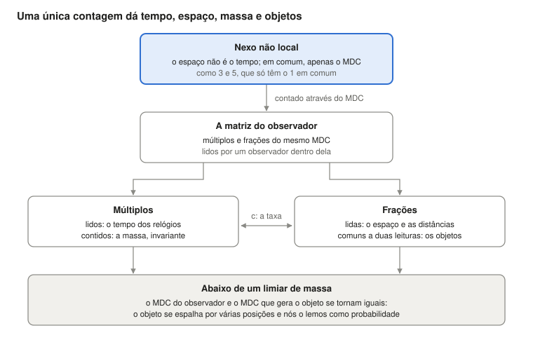

Quem faz cumprir as leis da física? Ninguém, se a matéria é a própria relação
Ugo Lanciano · Pesquisador independente, Locri (Itália) · ORCID 0009-0008-7618-9635
Versão 2.68.1, 2026-10-26 · Arquivado no Zenodo: 10.5281/zenodo.23672394 · Licença CC BY 4.0 · Desenvolvido com a ajuda de assistentes de IA, como declarado no registro.
O PDF da versão para estudantes está em inglês: PDF, versão para estudantes.
Percurso de leitura: Fundamentos: por que as leis valem · seguinte: MM 2.40.2
Primeira vez aqui? A Materialidade Matemática em resumo: todo o quadro teórico numa leitura de 8 minutos.
Versão para estudantes do registro MM 2.68.1 (DOI 10.5281/zenodo.23672394), escrita com um assistente de IA a partir do texto arquivado; o texto arquivado permanece no Zenodo.
Ugo Lanciano · ORCID 0009-0008-7618-9635 · Materialidade Matemática (MM) 2.68.1 · texto arquivado de 26 de outubro de 2026
Do que se trata. Este texto apresenta a Materialidade Matemática (MM), um quadro teórico que lê a física a partir das relações. Mostra a ideia de base, põe essa ideia à prova em um relógio e diz como o quadro teórico lê o espaço, os objetos, a massa, a mecânica quântica e o tempo. No final, relata quatro objeções de filósofos e as respostas do autor.
Como ler. O texto foi pensado para estudantes de física ou de filosofia. Cada palavra técnica é explicada na primeira vez em que aparece. As palavras próprias da MM também estão reunidas no glossário no final. Como o trabalho foi feito (pré-registros, verificações, arquivos) é contado na última seção.
A pergunta: quem garante as leis da física?
As leis da física valem em toda parte e sempre. Um elétron aqui e um elétron em uma galáxia distante seguem as mesmas regras. No entanto, ninguém as faz cumprir: não existe uma polícia da natureza. O que, então, as garante?
A Materialidade Matemática (MM) responde assim: a matéria não obedece a uma relação, a matéria é a relação. Este texto expõe a tese. Depois a aplica em um relógio, com duas premissas declaradas. Por fim, mostra como o quadro teórico lê o espaço, os objetos, a massa, os quanta e o tempo.
A ideia em três pontos.
- As leis não têm guardião. Uma coisa que as violasse não seria desobediente: seria outra coisa.
- Não existe um mundo por trás das relações. O mundo que vemos é a trama de relações, lida de dentro.
- A matemática funciona no mundo porque é a forma de uma relação do mundo, libertada na mente.
As duas respostas clássicas. A pergunta tem duas respostas tradicionais. As duas deixam um vão entre a regra e a matéria.
- A primeira coloca a lei em um "céu das formas", um mundo de ideias separado das coisas, como em Platão. Então não fica claro como a lei toca a matéria.
- A segunda coloca a lei na nossa linguagem: as leis seriam descrições feitas por nós. Então não fica claro como a linguagem adivinha o mundo.
Há também uma ideia mais recente: o universo seria uma simulação de computador. Essa hipótese coloca um programador no lugar do céu das formas. Vazza (2025) estimou que ninguém poderia pagar a energia necessária para uma máquina que simulasse o universo.
A Grande Inversão. A MM não constrói uma ponte sobre o vão: diz que não há vão. No quadro teórico, esse movimento se chama Grande Inversão. A ciência já o fez cinco vezes. Cinco coisas pareciam substâncias e se revelaram relações:
- o calórico, o fluido que se pensava levar o calor de um corpo a outro;
- o flogisto, a substância que se pensava sair dos corpos quando queimam;
- a força vital, que se pensava distinguir a matéria viva da matéria não viva;
- o éter, o meio em que se pensava que a luz viajava;
- o quilograma-protótipo de Paris, o cilindro de metal que por muito tempo foi o próprio quilograma; hoje o quilograma é definido por uma razão ligada à constante de Planck.
A cada vez o mundo permaneceu o mesmo. A MM aplica o mesmo movimento aos dois últimos itens: matéria e lei.
As palavras do quadro teórico. Oito palavras voltam ao longo do texto. Aqui basta o sentido delas; cada uma é retomada onde é necessária e no glossário no final.
- Nexo: o vínculo de partida entre dois termos distintos. O exemplo de referência é o vínculo entre os números 3 e 5.
- Não local: não situado no espaço e no tempo. É um sentido "pré-geométrico", isto é, que vem antes da geometria. Não significa ação à distância (§1).
- MDC: o máximo divisor comum, isto é, a única parte que os dois termos têm em comum. Para 3 e 5, é 1.
- Cópias: as repetições da unidade comum quando o nexo é contado. O 3 contém três cópias do 1, o 5 contém cinco.
- Matriz: o conjunto dos múltiplos e das frações do MDC, lido por quem está dentro dele. Aqui "matriz" não significa uma tabela de números da álgebra linear. Os múltiplos aparecem como tempo, as frações como espaço.
- Difração: o modo como a matriz do observador se divide em frações para dar um objeto.
- Registro: o que um observador coletou. Nos cálculos, é a tradução, escolhida pela IA, da matriz do observador.
- A tradução da IA: o modo como uma frase do autor se torna uma quantidade que pode ser calculada. É uma escolha, e o texto a assinala. Um resultado que depende de uma tradução diz respeito a essa tradução, não à premissa.
As premissas explicativas (IA). O texto contém também algumas "premissas explicativas (IA)". São pontes propostas pela inteligência artificial entre uma frase do autor e sua tradução em um cálculo. O autor as aceitou no texto em 26 de outubro. Não são teses do autor, e deixam para ele perguntas abertas (§10).
1. O ponto de partida: dois termos diferentes e a única coisa que têm em comum
As premissas filosóficas da MM cabem em cinco frases. Têm a forma lógica da relação entre 3 e 5. São os postulados da MM, como aqueles dos quais Einstein partiu para a relatividade: não são demonstrados, são avaliados por suas consequências.
Um lembrete de aritmética. Dois números inteiros são coprimos quando não têm divisores comuns além do 1. 3 e 5 são coprimos. 6 e 9 não são: têm o 3 em comum. O máximo divisor comum (MDC) é o maior número que divide os dois. O mínimo múltiplo comum (MMC) é o menor número que é múltiplo dos dois. Para 3 e 5, o MDC é 1 e o MMC é 15.
As cinco premissas:
- No início há uma diferença. Não há uma coisa: há uma diferença. A é diferente de B.
- Existir é recíproco. Dois entes existem um para o outro somente por meio do que têm em comum. Sem nada em comum, nem sequer se poderia dizer que são diferentes.
- Dois entes sem mais nada em comum são coprimos. Nada é atribuído a dois entes de partida, exceto o fato de serem dois entes distintos: o ser-dois. Portanto, não têm partes compostas em comum: são coprimos, como 3 e 5. Uma parte comum maior, como o 3 compartilhado por 6 e 9, seria um terceiro ente, e pediria mais uma razão.
- A unidade comum é contada. Só a unidade permanece em comum: MDC(3, 5) = 1. Para pertencer aos dois, a unidade precisa ser contada em cada um: três vezes em um e cinco no outro. Aquilo em que algo se repete tem partes, posições, distâncias: tornou-se local, isto é, situado no espaço e no tempo.
- As cópias são a mesma unidade. Três cópias da unidade são a mesma unidade contada três vezes. Entre duas cópias da mesma coisa não há distância. Assim, o mundo local traz dentro de si, disfarçado de número, o vínculo sem distância do qual partiu.
O primeiro nexo: espaço e tempo. O primeiro nexo é o que há entre o espaço e o tempo. Em sua fase não local, espaço e tempo são termos sem medida. Há apenas uma distinção lógica: o espaço não é o tempo. Os dois compartilham apenas seu MDC. Quando são contados, tornam-se o espaço e o tempo que medimos. Essa fase não é um nível distante: está presente em todo lugar e em cada instante.
Quatro características do nexo. A relação entre 3 e 5 tem quatro características, e elas são as características do nexo.
- Nenhum intermediário. 3 e 5 estão ligados pelo 1 sem nenhum número "no meio" que carregue o vínculo. É isso que "não local" significa: a relação não está situada em um lugar ou em um instante, e não viaja ao longo de um caminho.
- Os termos não vêm antes da relação. O 1 não é um tijolo à espera de ser usado. Ele aparece como a única coisa que os dois têm em comum.
- Contar faz o espaço e o tempo. O mínimo múltiplo comum, 15, contém o 3 cinco vezes e o 5 três vezes. Na matriz que nasce da contagem, os múltiplos aparecem como tempo e as frações como espaço. Quando várias contagens são combinadas (§2), o tempo é seu crescimento comum e o espaço é sua dispersão, isto é, o quanto as contagens individuais diferem umas das outras.
- Contar preserva o nexo. MDC × MMC = 1 × 15 = 3 × 5. Seja qual for o modo de contar no mundo local, o produto continua sendo o da relação de partida.
Premissa explicativa (IA): por que números. Os números não são quantidades de espaço e de tempo: na fase não local, espaço e tempo não têm medida. 3 e 5 são a forma aritmética de uma situação lógica: dois termos distintos que têm apenas uma unidade em comum. A contagem entra com a premissa 4. O que é comum, para pertencer aos dois, precisa aparecer em cada um; e aparecer várias vezes já é contar. Que as duas contagens difiram decorre da premissa 1: dois termos iguais seriam um só. Um caso concreto aparece no modelo do relógio (§2). Ali o passo em repouso (1, 1) não distingue as duas direções da luz. A assimetria entre duas contagens coprimas, como (3, 5), é, ao contrário, o que se lê como movimento.
A leitura da IA sobre o tempo e o espaço. Duas operações podem ser feitas sobre a unidade comum: multiplicá-la e dividi-la. A multiplicação dá uma sucessão ordenada de totais crescentes: 1, 2, 3 e assim por diante. A divisão dá partes distintas de um total que permanece o mesmo. Lida de dentro, a primeira é o que chamamos de tempo, a segunda o que chamamos de espaço. Tempo e espaço não vêm antes da contagem: são os nomes físicos da acumulação e da repartição da mesma unidade.
As palavras do autor. O autor diz assim (10 de outubro): «esiste un gradino sottostante della realtà dove uno strato non locale di logica materiale ha in sé le caratteristiche per generare il gradino di spazio e oggetti sovrastante» ("existe um degrau subjacente da realidade onde um estrato não local de lógica material tem em si as características para gerar o degrau de espaço e objetos que está acima"). O erro comum, acrescenta ele, é partir de um espaço objetivo como elemento necessário. No volume MM 2.30 esse é o programa pré-geométrico: um programa em que a geometria do espaço não é o ponto de partida, mas precisa sair do quadro teórico. As seções seguintes dizem quanto dele foi executado.
O que "não local" significa
A não localidade é o fundamento do quadro teórico. Na filosofia da física, a palavra tem pelo menos quatro sentidos. A MM usa um, deriva um segundo como consequência e exclui os outros dois.
Um lembrete: o teorema de Bell. O teorema de Bell (1964) diz respeito a duas partículas preparadas juntas e depois medidas longe uma da outra. Bell mostrou que certas correlações entre as medições não podem ser reproduzidas se três hipóteses valerem juntas:
- cada sistema carrega propriedades próprias, que as medições revelam (separabilidade);
- nenhuma influência viaja mais rápido que a luz;
- quem mede escolhe o que medir independentemente do estado da fonte (independência das configurações de medição).
Os experimentos encontram exatamente aquelas correlações. Pelo menos uma das três hipóteses, portanto, precisa ser abandonada.
Os quatro sentidos de "não local", e o que a MM faz com eles:
- Não localização (pré-geometria). A relação não está situada em um lugar ou em um instante. Na MM: é o sentido do quadro teórico, confirmado pelo autor em 13 de outubro.
- Não separabilidade (holismo). O sistema inteiro não se reduz à união de partes separadas no espaço, cada uma com um estado próprio. Na MM: é uma consequência da premissa. As cópias de um nexo são a mesma unidade contada várias vezes, não partes separadas.
- Não localidade de Bell. Correlações que nenhuma descrição com as três hipóteses de Bell reproduz. Na MM: as correlações medidas são um dado. Das três hipóteses, a premissa abandona pela raiz a primeira, a separabilidade. O modelo de loop com mediação local (§5), em que o vínculo vai e volta ao longo dos cones de luz passando pela fonte, abandona a terceira hipótese: a independência das configurações de medição em relação ao estado da fonte. Nenhuma influência à distância.
- Ação à distância. Uma influência ou um sinal passa de um lugar a outro mais rápido que a luz. Na MM: é excluída. Não há sinais, e o limite de Tsirelson é respeitado (§5).
As palavras do autor. Além da frase de 10 de outubro, três premissas dizem como o não local entra no mundo local.
- Em 13 de outubro a IA propôs ler "não local" como "não situado no espaço e no tempo". O autor respondeu: «sì, vale anche per la lettura» ("sim, vale também para a leitura").
- Em 24 de setembro: «MCD originale è il passaggio dallo stadio non locale al [locale] della realtà […] la matrice nasce come diffrazione di MCD nello spazio e nel tempo come elementi separati» ("o MDC original é a passagem do estágio não local ao estágio [local] da realidade […] a matriz nasce como uma difração do MDC no espaço e no tempo como elementos separados").
- Em 11 de outubro: «è la base non locale della realtà che forza il cosiddetto presente ad una parte parziale della matrice di cui fa parte l'osservatore; il legame non locale "accende" solo parte della matrice totale» ("é a base não local da realidade que força o assim chamado presente a uma porção parcial da matriz à qual o observador pertence; o vínculo não local 'acende' apenas parte da matriz total").
Premissa explicativa (IA): em lugar nenhum, presente em toda parte. O que não está em lugar nenhum não está "em outro lugar": não tem onde. No mundo local, aparece como uma cópia. Pela premissa 5, cada cópia é a mesma unidade contada mais uma vez. É por isso que a fase não local está presente em todo lugar e em cada instante, sem estar espalhada no espaço: cada lugar e cada instante é uma cópia dela. Disso decorre a não separabilidade. Duas cópias da mesma unidade não são duas coisas com estados próprios: são duas leituras do mesmo nexo.
Premissa explicativa (IA): a passagem e o presente. Nas frases do autor, o MDC original funciona como uma dobradiça. Ali o espaço e o tempo, que eram apenas distintos, encontram o elemento comum. Depois o nexo começa a ser contado e nasce a matriz, isto é, o mundo local. A fase não local não permanece uma origem distante. Segundo a premissa de 11 de outubro, ela seleciona dentro da matriz a parte "acesa": o presente de quem observa. E, pela resposta de 13 de outubro, o sentido de "não local" vale também para a leitura. Três perguntas permanecem abertas (§10): o que faz a contagem começar, o que distingue a parte acesa do resto, em que sentido a leitura é não local.
O que não se afirma. A fase não local não transmite sinais nem influências. Hoje ela não tem uma assinatura experimental própria: no quadro teórico, é uma premissa. Seu papel é dar uma razão para dois fatos. O primeiro: as leis são as mesmas em toda parte (§7). O segundo: as duas extremidades de um sistema emaranhado são um único nexo (§5). Um sistema está emaranhado ("entrelaçado") quando duas de suas partes, mesmo distantes, não têm estados separados: as medições em uma estão correlacionadas com as medições na outra.
Os vizinhos. Outras ideias se parecem com esta.
- Para David Bohm (1980), o que parece separado está envolvido em um todo indiviso, que ele chama de "ordem implicada".
- Para Mark Van Raamsdonk (2010), a conexão do espaço vem do emaranhamento.
- A não separabilidade como tese distinta da localidade é de Don Howard (1985), que a encontra em Einstein. É também de Paul Teller (1986), com o "holismo relacional".
- Sobre a relação entre a não localidade de Bell e a relatividade, a referência é Tim Maudlin (2011).

Figura 1. Os múltiplos e as frações do mesmo MDC, lidos por quem está dentro da matriz, são tempo e espaço. Quando são contidos ou compartilhados, são massa e objetos. As seções 2-6 seguem esse esquema de cima para baixo.
2. Um relógio feito de 3 e 5: da contagem ao tempo de Einstein
A inversão não é apenas uma ideia: é um procedimento. Em um relógio, com duas premissas declaradas, ela pode ser executada até o número. O resultado: o relógio que conta cópias mostra o tempo próprio de Einstein.
Um lembrete de relatividade. O tempo próprio é o tempo mostrado por um relógio que se leva junto. A relatividade especial diz que um relógio em movimento mostra menos tempo que um em repouso. Se o relógio se move com velocidade v, o fator é √(1 − v²), com v medida em unidades da velocidade da luz. Usa-se um diagrama de espaço-tempo, com o tempo no eixo vertical e o espaço no horizontal: os raios de luz são retas inclinadas. Entre dois tique-taques sucessivos do relógio pode-se desenhar um diamante de luz, também chamado de diamante causal. Ele é delimitado pelos raios de luz que partem do primeiro tique-taque, um para a direita e um para a esquerda, e pelos que chegam ao segundo. Os dois lados do diamante, a e b, medidos ao longo das direções da luz, são os lados de luz do passo: suas coordenadas de cone de luz.
O procedimento tem quatro passos.
- Retirar a substância. Toma-se uma quantidade que parece uma coisa, o tempo que flui, e pergunta-se qual relação ela é. Na MM, o tempo de um relógio vem das cópias que ele conta.
- Escrever a relação como um par. Um passo elementar é descrito pelo par de seus dois lados de luz, a e b. Aqui entra uma premissa, chamada B no registro MM 2.40: os dois lados são números inteiros coprimos, e o passo não pode ser dividido. Quando o relógio está em repouso, os dois lados são iguais e o passo é (1, 1); quando ele se move, são diferentes, como (3, 5). As cópias surgem nos múltiplos comuns, e o diamante de luz contém a × b = MDC × MMC células.
- Combinar as duas direções. Uma segunda premissa, chamada C: duas direções opostas não se somam, se multiplicam. O relógio mostra √(a × b), a média geométrica dos dois lados. O laboratório, que soma, mede (a + b)/2, a média aritmética.
- Comparar com a lei conhecida. Com 3 e 5, o relógio mostra √15 ≈ 3,873. O laboratório mostra (3 + 5)/2 = 4. A razão entre os dois tempos é 0,968. No laboratório, o tempo do passo é (a + b)/2 e o deslocamento é (b − a)/2: a velocidade é a razão entre eles, (5 − 3)/(5 + 3) = 2/8, isto é, um quarto da velocidade da luz. Para essa velocidade, a relatividade dá √(1 − 1/16) = 0,968: o mesmo número.
Premissa explicativa (IA): por que o produto e não a soma. A quarta característica do nexo diz que contar preserva o produto. As cópias de um passo preenchem a × b = MDC × MMC células. A duração do passo deve, portanto, ser medida com uma operação que preserve o produto. Toma-se o produto ab, e sua raiz quadrada √(ab) para voltar à escala de uma única contagem. É como o lado do quadrado que tem o mesmo número de células que o retângulo a × b. Por exemplo, um retângulo 3 × 5 tem 15 células, e o quadrado com 15 células tem lado √15 ≈ 3,873. A soma a + b, ao contrário, muda quando muda a assimetria entre os dois lados.
Quais mudanças de observador preservam o nexo. Passar a um observador em movimento uniforme em relação ao primeiro significa alongar um lado de luz por um fator k e encurtar o outro pelo mesmo fator: a se torna ka e b se torna b/k. Assim, o produto ab = (ka)(b/k) não muda. O fator k é o do cálculo k de Hermann Bondi (1964): um modo de fazer relatividade especial apenas com sinais de luz, como pulsos de radar, em que k é o fator Doppler relativístico. Aqui k entra como a transformação que preserva o produto, não como uma hipótese colocada antes dele.
O fator de Einstein entra com a premissa C. Daí em diante é uma identidade, isto é, uma igualdade sempre verdadeira. A média aritmética supera a média geométrica, exceto quando os lados são iguais. A razão entre elas é sempre √(ab)/((a + b)/2) = √(1 − v²). É a identidade do cálculo k de Bondi (1964). A partir dela, Kevin Knuth e Newshaw Bahreyni (2014) derivam a métrica de Minkowski e as transformações de Lorentz. Elas são a geometria do espaço-tempo na relatividade especial e as regras para passar de um observador a outro.
Lugares atribuídos ou não. O registro MM 2.40 acrescenta um teste que toca a filosofia do espaço. Uma terceira premissa, chamada A, diz que os eventos não ficam em lugares dados de antemão. Nos cálculos, as cópias são espalhadas ao acaso, de modo uniforme. Essa é uma hipótese acrescentada: a premissa a motiva, mas não a impõe.
Premissa explicativa (IA). A premissa A é a segunda característica do nexo (§1) aplicada aos eventos: os termos não vêm antes da relação. Lugares dados de antemão seriam termos que existem antes das relações. Seriam, isto é, o recipiente que a inversão retira.
O teste compara dois modos de ler o tempo. O primeiro lê a cadeia mais longa de cópias: partindo do primeiro vértice do diamante, salta de uma cópia a outra, sempre em direção ao futuro, dentro dos cones de luz, e conta o maior número de saltos com que chega ao último vértice. O segundo conta as cópias multiplicando os dois lados, com √(ab).
- Com 200.000 cópias espalhadas ao acaso, o relógio que lê a cadeia mais longa mostra √(1 − v²) dentro de 1%.
- Se, ao contrário, as cópias ficam em uma grade regular, com lugares fixos e instantes iguais para todos (síncronos), a mesma cadeia dá a média aritmética (a + b)/2, isto é, o tempo absoluto de Galileu, que não desacelera com o movimento. Se os lugares são fixos, mas os tempos são sorteados, a desaceleração supera a de Lorentz em 7-29%.
- Na mesma grade, o relógio que conta as cópias multiplicando os dois lados recupera, ao contrário, Einstein, dentro de 0,43%.
Para um relógio que lê cadeias de eventos, portanto, lugares fixados antes dos eventos agem como um referencial privilegiado e quebram a relatividade. Um relógio que conta cópias recupera a relatividade mesmo na grade.
Antes dos cálculos, o registro MM havia escrito um critério registrado: uma regra fixada de antemão para dizer quando o conjunto de testes, chamado P1-P5, é bem-sucedido. O registro MM declara que o critério não foi atendido: um teste em v = 0,8 ficou fora da tolerância de 6%.
Mais de dois lados: a regra dos pares (MM 2.40.2, 25 de outubro). Se um relógio tem n lados contados, a premissa "direções opostas se multiplicam" pode ser estendida de dois modos. Para n = 2, os dois modos coincidem.
- A regra do produto: o relógio mostra a média geométrica de todos os lados.
- A regra dos pares: os lados são multiplicados dois a dois, para todos os pares de lados diferentes, e os produtos são somados: Q = Σ xᵢxⱼ. O relógio mostra √Q. Por exemplo, com três lados x, y e z tem-se Q = xy + xz + yz.
Premissa explicativa (IA): por que pares. O nexo é uma relação entre dois termos (premissa 1). Com mais lados, cada par é um nexo, e a regra dos pares soma os nexos. A regra do produto de n lados seria, ao contrário, uma relação entre n termos de uma só vez, que as premissas não contêm.
Com a regra dos pares, o crescimento comum dos lados é o tempo, e sua dispersão é o espaço. n lados dão um tempo e n − 1 direções de espaço, equivalentes na forma. Isso pode ser visto pela álgebra. Se m é a média dos lados, Q = [n(n − 1)·m² − Σ(xᵢ − m)²]/2. O primeiro termo, o crescimento comum, tem sinal positivo: é o tempo. O segundo, a dispersão dos lados em torno da média, tem sinal negativo e n − 1 direções independentes, porque os desvios em relação à média somam zero: é o espaço. É a forma da métrica de Minkowski, t² − x² − y² − z². Três lados dão um espaço-tempo 2+1, isto é, duas direções de espaço e uma de tempo. Quatro lados dão 3+1, como o espaço-tempo que observamos. A regra do produto, a partir de três lados, não tem transformações de Lorentz.
O que os cálculos dizem. Os testes foram feitos em estruturas construídas a partir de quatro contagens independentes.
- A regra dos pares dá uma dimensão de espaço-tempo de 3,92 ± 0,11, próxima de 4. O valor é medido nos seis intervalos que ficam quase inteiramente dentro da região estudada, para evitar efeitos de borda; em todos os intervalos, é 3,61. Um intervalo, aqui, é a região entre dois eventos, como o diamante de luz de um passo.
- Para o primeiro observador, os relógios em movimento reproduzem a desaceleração da relatividade dentro de 2%: a razão entre o valor medido e o valor esperado é 0,981 e 0,998. A regra do produto erra por 12%.
- Duas previsões registradas não se confirmaram: a dimensão estimada a partir da cadeia mais longa (3,45) e a comparação entre dois observadores.
- A isotropia das estruturas, isto é, o fato de todas as direções serem equivalentes, não foi testada.
- No total: 20 testes aprovados, 4 não aprovados, 4 não avaliáveis.
O que já se sabia. A álgebra é conhecida. São os "referenciais nulos", conjuntos de direções da luz usados como referência, de Zeeman (1964), Derrick (1981), Coll e Morales (1991). Knuth (2016) relata que, com cadeias coordenadas, uma medida consistente só existe para duas ou quatro cadeias. A regra não diz quantos lados existem. O quatro é um dado de entrada, escolhido para coincidir com o espaço-tempo observado. A próxima seção propõe uma leitura dele.
3. Quantas dimensões? Duas de uma regra, a terceira dos dados
A MM admite as três dimensões do espaço, como a física atual, que as toma como dadas. O autor o diz (25 de outubro): «MM ammette le tre dimensioni, è parimenti efficace per ora» ("a MM admite as três dimensões; é igualmente eficaz por enquanto"). Há argumentos conhecidos sobre por que o espaço tem três dimensões. Dizem respeito à estabilidade das órbitas e à possibilidade de existirem observadores (Ehrenfest 1917; Tegmark 1997). Por exemplo, Ehrenfest notou que, com mais de três dimensões, as órbitas dos planetas não seriam estáveis. São argumentos, não derivações.
Duas direções de uma regra. Uma premissa de 24 de outubro diz: «MCD ha il descrittore spazio, il descritto tempo e se stesso» ("o MDC tem o descritor espaço, o descrito tempo e a si mesmo"). A IA traduziu os três aspectos como três contagens independentes. Com a regra dos pares, três contagens dão um tempo e duas direções de espaço. O teste em estruturas construídas a partir de três contagens deu uma dimensão de espaço-tempo de 2,98 ± 0,05 (MM 2.40.2).
Premissa explicativa (IA): descritor e descrito. A IA lê assim as duas palavras do autor. O descritor é o ponto de vista que lê; o descrito é o que é lido. O espaço descreve, porque é onde a leitura coloca as coisas. O tempo é descrito, porque é o que, uma vez lido, se acumula. O MDC é o terceiro aspecto porque a premissa 2 o torna necessário: é aquilo por meio do qual os dois existem um para o outro, e não se reduz a nenhum deles. Uma premissa de 27 de setembro tem a mesma estrutura em três partes: «top tempo, gli altri due spazio e specchio di se stesso» ("topo tempo, os outros dois espaço e espelho de si mesmo").
O presente é uma superfície. Premissa de 25 de outubro: «il 3+1 che misuriamo lo misuriamo in una complicazione di matrice in MM, non nel presente fisico, dove 2+1 è l'immediato che esiste» ("o 3+1 que medimos, nós o medimos em uma complicação da matriz na MM, não no presente físico, onde 2+1 é o imediato que existe"). O 2+1 é a geometria do imediato, isto é, do que existe no presente. A terceira direção do espaço está no modo como as leituras se compõem.
A ideia de que o ponto de partida seja uma superfície tem um precedente conhecido: o princípio holográfico ('t Hooft 1993; Susskind 1995). Ele diz que a informação contida em uma região pode ser escrita na superfície que a envolve, como em um holograma. A MM não adota seus cálculos.
Premissa explicativa (IA): por que o imediato para em 2+1. O imediato é o nexo lido de uma só vez, com seus três aspectos e nada mais. Um nível a mais daria uma terceira direção de espaço, e não um segundo tempo. A razão está na regra dos pares. O crescimento comum de todas as contagens permanece sempre um só, e é o tempo. Cada contagem independente adicional, ao contrário, aumenta a dispersão e acrescenta, por construção, uma direção de espaço.
A terceira direção a partir dos dados. Por que apenas um nível acima do imediato? O autor responde: «Perché così è fatta la matrice desunta dai dati» ("Porque é assim que é feita a matriz inferida dos dados") (25 de outubro). A IA comparou dois modos de traduzir esse nível extra, em um trabalho exploratório de 25 de outubro, ainda não depositado e ainda não verificado por um segundo sistema:
- repetir o imediato: uma pilha de cópias da mesma superfície, como folhas idênticas empilhadas. O espaço permanece plano.
- aninhá-lo por múltiplos: cada nível dentro do anterior, como caixas uma dentro da outra. O espaço se curva depois de poucos passos, como uma geometria hiperbólica.
Uma geometria hiperbólica tem curvatura negativa: afastando-se de um ponto, o espaço disponível cresce mais rápido que em um espaço plano. Uma sela dá uma ideia disso.
O teste não serve para contar as direções do espaço: a construção as fixa em três, acrescentando um nível ao imediato 2+1. Serve para comparar a forma, isto é, a curvatura que resulta. O espaço observado é plano. É o que mostra o parâmetro de curvatura Ω_k, que é zero para um espaço plano. As medições dão Ω_k = 0,0007 ± 0,0019. Elas vêm do satélite Planck (resultados de 2018), que mediu a radiação que restou do universo primitivo, junto com as oscilações acústicas de bárions: vestígios de antigas ondas sonoras na distribuição das galáxias, usados como régua. Os dados escolhem a pilha. Falta verificar um ponto: que esse nível entre na regra dos pares como um quarto lado igual aos outros três. Só assim a terceira direção do espaço é indistinguível das outras duas, como exige a isotropia observada.
Um resultado já conhecido. Que uma hierarquia de células aninhadas dê uma geometria hiperbólica é um resultado conhecido.
- Na física, Brian Swingle (2012) lê as redes de renormalização de emaranhamento (MERA) como uma versão discreta do espaço anti-de Sitter, que é hiperbólico. Uma rede MERA descreve um estado quântico camada por camada, em escalas cada vez maiores.
- Na matemática, Mario Bonk e Oded Schramm (2000) mostram que acrescentar a um espaço suas escalas, como mais uma direção, dá um espaço hiperbólico: o "cone hiperbólico".
A conclusão "os dados escolhem a pilha" não repousa, portanto, apenas no trabalho não depositado.
Lei e história. Aqui a MM traça uma fronteira que interessa ao filósofo. No quadro teórico, com a regra dos pares:
- o que decorre da identidade das relações é lei: o fator de Einstein, o tempo como crescimento comum, o espaço como dispersão;
- o que se lê da medição é história: o número de níveis, o valor das massas individuais, a intensidade da força forte.
Para as massas, o autor usa uma imagem: «è come se da una casa completa e finita si dovesse derivare la storia di un singolo mattone» ("é como se, de uma casa completa e acabada, se tivesse de derivar a história de um único tijolo"). Perguntaram-lhe com que frequência, no modelo, a história de um elétron muda de direção. Ele acrescentou: «la parola quanto spesso in sé non esiste, ma è legata alla storia del singolo mattone che stai prendendo in considerazione» ("a palavra 'com que frequência' não existe em si, mas está ligada à história do único tijolo que você está considerando"). A MM não promete deduzir tudo. Promete que o que é lido cabe em um único quadro teórico, sem contradições.
4. Objetos e massa: o que lê quem observa
No quadro teórico da MM, as frações da contagem dão objetos e distâncias; os múltiplos dão tempo e massa. Dois registros de 24 de outubro, corrigidos no dia 25, põem à prova traduções dessas duas teses: MM 2.62 e 2.62.1 sobre os objetos, MM 2.64 e 2.64.1 sobre a massa. As versões corrigidas assinalam os lugares em que uma escolha da IA havia sido apresentada como resultado.
O que é um objeto
A tese do autor. Os objetos observados são autônomos em suas relações locais. No entanto, estão ligados a quem observa por uma difração, em frações, da matriz do observador. Sobre dois observadores, a premissa de 23 de outubro diz que a matriz deles, «pur non essendo globalmente uguale, è in larga percentuale uguale, tanto da legarsi alla stessa proiezione, ossia gli oggetti fisici in comune osservati» ("embora não seja globalmente igual, é igual em grande porcentagem, a ponto de se ligar à mesma projeção, isto é, aos objetos físicos observados em comum"). O modelo não testou essa frase.
Premissa explicativa (IA): o que "difração" significa. Na MM, "difração" é um termo do quadro teórico. A IA o lê por analogia com a óptica. Uma rede de difração é uma placa com muitas fendas paralelas. Ela divide uma única onda de luz em "ordens": feixes separados, cada um uma fração bem definida do todo. Do mesmo modo, a matriz do observador, que é uma só, se divide em frações, e uma fração que é lida é um objeto. Na ontologia do autor, as matrizes de dois observadores se sobrepõem em grande parte. Isso evita o solipsismo, a ideia de que só existe a mente de quem observa, sem recolocar uma substância por trás das relações. A tradução a seguir exprime a sobreposição como a parte comum de dois registros. Não deriva, porém, por que os dois registros concordam.
Os vizinhos. Os mais próximos precisam ser nomeados primeiro.
- O darwinismo quântico de Wojciech Zurek. A informação sobre um sistema é copiada muitas vezes no ambiente, por exemplo na luz que o sistema espalha. Muitos observadores podem lê-la de forma independente e encontrar o mesmo valor. Zurek fala de "existência relativamente objetiva".
- A mecânica quântica relacional — em que o estado de um sistema é sempre relativo a outro sistema — e os vínculos entre as perspectivas de observadores diferentes (Adlam e Rovelli 2023).
Até onde pesquisamos, porém, nenhum estudo define o próprio objeto como a parte comum dos registros de dois observadores.
A tradução posta à prova. É uma escolha da IA. A matriz do observador é representada por seu registro. O objeto que dois observadores veem é a parte comum de seus registros. É o que cada um lê do próprio registro, sem olhar o do outro, encontrando o mesmo valor que o outro. Na teoria da informação, essa quantidade se chama parte comum de Gács–Körner. O modelo é o do darwinismo quântico. Há uma fonte que pode ter dois valores. Há muitos "portadores" espalhados, como os fótons espalhados, que copiam o valor da fonte com algum erro. E há dois observadores, que coletam cada um um grupo de portadores.
Os resultados:
- Descartada: a leitura "o objeto é ter a mesma estatística". Dois observadores que lançam cada um sua própria moeda encontram a mesma estatística, metade cara e metade coroa, mas não observam o mesmo objeto.
- Não é conforme aos critérios, mas não é excluída: a leitura "o objeto é matéria compartilhada", isto é, a ideia de que, para ver o mesmo objeto, dois observadores precisam coletar os mesmos portadores. No modelo, de fato, dois observadores com 63 portadores cada um e nenhum em comum já concordam sobre o valor da fonte, com precisão de uma parte em um milhão.
- Compatível: a parte comum. Se as cópias são imperfeitas, a parte comum exata é zero até que os registros sejam comparados. Admite-se, então, uma pequena probabilidade de desacordo: a tolerância declarada δ = 10⁻⁶, com cópias que erram uma vez em dez. A parte comum permanece zero enquanto cada observador tiver até 22 cópias. Com 23 cópias, o desacordo cai abaixo de δ, e o objeto inteiro aparece de uma só vez. Com δ = 10⁻³ e δ = 10⁻⁹, os números correspondentes são 11 e 37 cópias.
- Um objeto com vários valores chega em degraus. Aqui a fonte pode estar em doze células; as cópias são borradas e podem errar por uma célula; a tolerância é a mesma. Com 82 cópias, os dois observadores concordam sobre qual metade das células contém o objeto; com 88, sobre qual terço; com 91, sobre qual quarto; com 101, sobre a célula individual, isto é, sobre o objeto inteiro. São limites inferiores, dentro da classe de leituras testada.
A leitura proposta. O objeto não é uma coisa dada antes das leituras, nem uma imagem privada: é o que duas leituras têm em comum. A cadeira não é retirada do modelo: continua sendo uma parte da estrutura, com um estado próprio. O que a tese retira é um objeto comum adicional, dado antes dos registros. Este registro não deriva a objetividade e não resolve o problema da medição. Essa é a questão de como, na mecânica quântica, uma superposição de possibilidades dá um único resultado observado.
O que é a massa
A tese. A mesma contagem é tempo quando é lida, e é massa quando está contida diretamente na matriz do ponto de observação.
A física já liga massa e tempo.
- Toda massa carrega um ritmo: a frequência de Compton mc²/h, em que m é a massa, c a velocidade da luz e h a constante de Planck. Quanto maior a massa de um corpo, mais rápido seu ritmo.
- Todos os corpos caem do mesmo modo, seja qual for o material de que são feitos, com precisão de algumas partes em 10¹⁵. É o princípio da equivalência.
Premissa explicativa (IA). Um múltiplo que é lido se torna uma série de eventos distintos: é o tique-taque de um relógio, isto é, o tempo. Um múltiplo contido permanece o mesmo em cada leitura. Se quem observa copia o corpo a cada tique-taque, descobre que essa parte não muda. O que muda entre as leituras é o tempo; o que permanece igual é a massa. É por isso que a massa aparece como um invariante, uma quantidade que não muda entre as leituras. É a leitura que a tradução M-i, abaixo, põe à prova.
Os resultados:
- Descartada: a leitura "o número de peças pesa", isto é, a ideia de que o que pesa é a soma das massas das peças tomadas uma a uma, sem a energia que as mantém unidas. Titânio e platina têm ligações diferentes: com essa leitura, cairiam com uma diferença de 7,5 × 10⁻⁴. O satélite MICROSCOPE, que comparou a queda de massas de teste de titânio e platina, não vê nenhuma diferença com uma precisão de cerca de 10⁻¹⁵.
- Compatíveis: três leituras que tratam "contido" como uma propriedade do corpo. Elas coincidem com a física padrão por identidade ou por construção. A primeira é a massa como ritmo de Compton. A segunda é a massa de Komar, um modo da relatividade geral de calcular a massa de um corpo a partir de seu campo gravitacional. A terceira é a massa como um teto para estados distintos: no máximo dois por ciclo de Compton (Margolus e Levitin 1998). O teorema de Margolus e Levitin diz que um sistema com uma dada energia não pode passar por estados completamente distintos mais rápido que um certo ritmo.
- A tradução M-i (25 de outubro) é a mais próxima das palavras do autor. Quem observa copia o mesmo corpo a cada tique-taque do próprio relógio. O que muda entre as cópias é o tempo lido. O que permanece igual é o múltiplo contido, e seu tamanho é a massa. Entre observadores em movimento, o que permanece em comum é a massa invariante, aquela que todos os observadores encontram igual.
A leitura que resulta. A massa não é uma substância encerrada dentro do corpo: é o que permanece idêntico através das leituras. É a mesma ideia com que Eugene Wigner (1939) classificou as partículas: a massa como invariante das transformações entre observadores. Três limites precisam ser declarados. Nenhuma tradução dá hoje números diferentes da física conhecida. As leituras compatíveis não são provas independentes. Nenhuma massa individual é derivada.
No quadro teórico, objetos e massa são duas faces da mesma contagem. As frações lidas em comum por dois observadores dão os objetos. Os múltiplos contidos e invariantes dão a massa.
5. Mecânica quântica: onde nasce a probabilidade
O mesmo quadro teórico que lê o espaço, o tempo, os objetos e a massa admite a mecânica quântica. Não muda suas previsões, mas propõe onde nasce a probabilidade. O trabalho do período está em três premissas (13 e 22 de outubro), nos registros MM 2.48 (14 de outubro) e 2.66 (25 de outubro) e na versão 2.48.1 (26 de outubro).
Dois lembretes. A regra de Born dá as probabilidades da mecânica quântica: a probabilidade de um resultado é o quadrado do módulo de sua amplitude, |ψ|². O limite de Tsirelson diz respeito ao teste mais usado do teorema de Bell, que combina quatro correlações em um único número. Se cada sistema tem propriedades próprias e locais, o número não ultrapassa 2. A mecânica quântica chega no máximo a 2√2: é o limite de Tsirelson.
Não localidade sem sinais. No emaranhamento, dois sistemas distantes permanecem correlacionados, sem que nada viaje diretamente de um ao outro. Para a MM, esse é o vestígio da fase não local do nexo, em que "não local" significa não situado no espaço e no tempo. Se em cada uma das duas extremidades as leituras seguem a geometria dos estados quânticos com a regra de Born (a "geometria de Born"), nenhuma correlação ultrapassa o limite de Tsirelson, 2√2. A medição mais precisa dá 2,82759 ± 0,00051 (Poh et al. 2015). O limite é fixado pela leitura local, não pelo estrato não local, e a não localidade do quadro teórico é compatível com os experimentos.
Premissa explicativa (IA): a fase não local e o loop. Os dois níveis fazem dois trabalhos diferentes.
- A fase não local, uma premissa do autor, diz por que as duas extremidades são um único sistema: são duas cópias do mesmo nexo.
- O modelo de loop, a tradução da IA em 2.48, mostra que as correlações medidas são reproduzidas sem influências fora dos cones de luz. O cone de luz de um evento contém todos os pontos que um sinal não mais rápido que a luz pode alcançar. No modelo, o vínculo passa pela fonte, e nada vai diretamente de uma extremidade à outra.
Nos termos do teorema de Bell, a premissa abandona pela raiz a primeira hipótese: a separabilidade, isto é, que cada sistema carregue propriedades próprias. O modelo, escrito nos cones de luz, abandona a terceira: a independência das configurações de medição. Na leitura da IA, essas não são duas brechas somadas, mas o mesmo fato visto de dois lados. A partir da fase não local, é a unidade das duas extremidades; na leitura local, é o fechamento de um loop.
O modelo não torna a premissa supérflua. Pode-se objetar que, para fazer das duas extremidades um único sistema, basta a origem comum na fonte. Mas no loop o peso de um resultado não vem apenas da fonte. Vem do fechamento da história inteira, de ida e de volta: em 2.48, os futuros ponderados pelo fechamento do loop dão a regra de Born. Que essa história fechada seja uma só é o que a fase não local nomeia. Duas coisas permanecem abertas (§10): se isso acrescenta algo à origem comum, e se os dois lados são realmente o mesmo fato.
A regra é decidida pelas cópias. Premissa de 13 de outubro: «la regola la decide il numero e la correlazione reciproca delle copie del nesso» ("a regra é decidida pelo número e pela correlação recíproca das cópias do nexo"). A IA a leu com Rafael Sorkin (1994).
Um lembrete. No experimento da dupla fenda, a figura na tela não é a soma das figuras dadas por cada fenda sozinha. Há um termo extra, a interferência, que depende dos pares de fendas: Sorkin a chama de interferência de segunda ordem. Com três fendas, a mecânica quântica não prevê nenhum novo termo "de três caminhos": tudo se reduz a pares.
Na leitura da IA, a correlação recíproca das cópias é a interferência de segunda ordem: nenhuma interferência irredutível de três caminhos, como exige a mecânica quântica. Essa ordem, porém, não fixa por si só o quadrado |ψ|². O cálculo a seguir acrescenta hipóteses que a premissa não impõe: apenas pares, e uma matriz de Gram, isto é, a tabela dos produtos entre as cópias tomadas duas a duas. No tabuleiro de 2.40, uma partícula avança em passos ao longo das direções da luz, em um modelo semelhante ao tabuleiro de Feynman. A cada passo, uma "moeda", isto é, uma pequena tabela de pesos, decide quanto pesa seguir em frente e quanto pesa virar. As franjas escuras, onde os caminhos se cancelam, só aparecem com pesos não positivos para as viradas, isto é, negativos ou complexos. Uma moeda com pesos reais, positivos e negativos, dá as mesmas probabilidades que a moeda com um peso imaginário.
O futuro escolhe o passado. Perguntaram ao autor: "o que faz uma leitura ser escrita no registro?". Ele respondeu (13 de outubro): «è il futuro di una storia che sceglie il suo passato; quindi la risposta alla tua domanda è il loop» ("é o futuro de uma história que escolhe seu passado; portanto a resposta à sua pergunta é o loop"). A leitura é conhecida: o formalismo de dois tempos de Aharonov, Bergmann e Lebowitz (1964), a interpretação transacional de Cramer (1986), a revisão de Wharton e Argaman (2020). São leituras retrocausais: uma fronteira no futuro ajuda a fixar o resultado.
O que os cálculos dizem:
- Um futuro que escolhe o resultado dá as frequências de Born somente com certas regras para ponderar os futuros: por exemplo, ponderar cada futuro pelo fechamento de seu loop, de ida, da preparação ao futuro, e de volta. Essa regra de ponderação, a "medida sobre os futuros", não é derivada do modelo: permanece um postulado.
- Um modelo do singleto com mediação local reproduz as correlações com cada vínculo dentro dos cones de luz. O singleto é o estado de duas partículas com spins opostos usado nos experimentos de Bell. No modelo, o parâmetro fixado pela leitura futura de uma extremidade volta à fonte e segue para a outra extremidade. A lei angular, isto é, o modo como a correlação depende do ângulo entre as duas medições, é assumida. A ausência de sinais observáveis só vale com o peso de Born, como Argaman (2010) já havia notado.
- Com um peso diferente do de Born, e acrescentando um segundo vínculo (assumido), um bit poderia voltar ao passado de quem o envia: um sinal enviado ao próprio passado. As histórias consistentes se tornariam tão improváveis quanto se queira. O passo de "improvável" a "não pode existir" é um postulado do autor.
Premissa explicativa (IA). Um peso diferente do de Born tornaria as histórias consistentes tão improváveis quanto se queira. Excluí-las como impossíveis equivale a postular, como faz o autor, que o presente observado requer um fechamento consistente dos loops. É um argumento sobre as condições do presente, e permanece um postulado.
O preço. Para um filósofo, o preço é este: as configurações de medição não são independentes do estado, porque o futuro entra em sua preparação. A MM se coloca entre as leituras retrocausais com mediação local. Uma correção: 2.48 corrige as versões anteriores, que chamavam a MM de não local no sentido do teorema de Bell.
Onde termina o comportamento quântico. Premissa de 22 de outubro: abaixo de um certo nível de massa, o MDC do ponto de observação e o MDC da difração que gera o objeto se tornam iguais, como em um espelho. O objeto então não fica mais em um único ponto, e nós o observamos como probabilidade.
Premissa explicativa (IA): duas células comparadas. O MDC igual a 1 é o do nexo de partida. A IA lê o MDC de uma contagem local como sua unidade: a menor célula que ela distingue, isto é, sua resolução. Quem observa lê com a própria célula; o objeto é gerado, na difração, com a sua. Enquanto a célula do observador for mais fina que a que gera o objeto, a leitura fixa o objeto em um lugar. Quando as duas células se tornam iguais, a leitura não tem parte mais fina com que fixá-lo, e o objeto se espalha por várias posições. É como medir um grão com uma régua cujas marcas são tão grandes quanto o grão.
A tentativa de dar um número ao limiar (MM 2.66). O registro 2.66 tentou dar um número ao limiar, com leituras dos dois MDCs escolhidas pela IA. Para a leitura da distância, isto é, da posição, o limite se revela não uma única massa, mas uma razão. É o tamanho a ser distinguido comparado com a célula das cópias que o distinguem, junto com o número de cópias. Por exemplo, na decoerência a célula é o comprimento de onda da luz espalhada pelo objeto, e as cópias são os fótons espalhados. Coincide com a decoerência da física conhecida, agora escrita como uma regra do quadro teórico. A decoerência é o processo pelo qual um objeto, trocando informação com o ambiente (luz, moléculas do ar), perde na prática os sinais de superposição.
- Duas leituras da IA não decorrem dos dados. A primeira liga o limiar à aceleração galáctica: mas aglomerados de sódio de mais de 170.000 unidades de massa atômica ainda dão figuras de interferência (Pedalino et al. 2026). A segunda coloca o limiar na massa do próton, cerca de 1 unidade de massa atômica: mas um átomo inteiro de césio permanece em superposição por 70 segundos (Panda et al. 2024).
- Outros limiares continuam possíveis, e hoje não são testáveis: na massa de Planck (22 microgramas) ou em m_P/√2; na massa do observador (70 kg); do tipo de Diósi e Penrose, em que superposições de grandes massas terminam por si mesmas. Uma previsão está registrada com data-limite de 31 de dezembro de 2035.
Propõe-se ler a fronteira entre quântico e clássico onde um objeto se torna a parte comum dos registros. É o mesmo conceito de objeto da seção 4.
A regra de Born a partir da contagem de cópias (26 de outubro). A imagem do autor: «se dovete descrivere un 10 per mezzo di un numero 1, sarete costretti a distribuire il descrittore 1 in 10 spazio tempi del numero 10» ("se você precisa descrever um 10 por meio de um número 1, será forçado a distribuir o descritor 1 por 10 espaços-tempos do número 10"). A IA o traduziu assim: a amplitude se divide em muitas cópias do mesmo tamanho ("de módulo igual"), e conta-se quantas cópias caem em cada resultado. No tabuleiro de 2.40, essa tradução dá exatamente |ψ|² em todas as 66 razões racionais testadas, isto é, as frações com denominador até 12. São necessárias três hipóteses declaradas:
- que as probabilidades existam;
- que cópias de módulo igual contem o mesmo: esta é a tradução matemática, feita pela IA, da premissa do descritor distribuído;
- que as probabilidades se somem sobre cópias distintas e totalizem 1.
Premissa explicativa (IA). Se um 10 é descrito distribuindo o 1 por dez lugares, em cada lugar há o mesmo 1 (premissa 5). A hipótese 2 traduz essa identidade em probabilidade: a ausência de diferenças entre as cópias se torna igual probabilidade das cópias de módulo igual. É uma hipótese declarada, não uma dedução.
Para razões irracionais, é necessária também a continuidade. A construção é análoga à de Zurek (2005), com uma diferença: aqui a igual probabilidade é declarada como premissa, não derivada. É exatamente o passo que Schlosshauer e Fine (2005) contestam na derivação de Zurek. Por que exatamente o quadrado, e não outra potência? Entre os expoentes testados, a moeda de 2.40 deixa inalterada, passo após passo, apenas a soma dos quadrados dos módulos das amplitudes. O quadrado vem daí, junto com as amplitudes complexas e a superposição linear. A regra de Born não é, portanto, derivada sem hipóteses, mas tem um lugar preciso no quadro teórico.
O que se pode dizer hoje. Hoje nenhum experimento distingue a MM da mecânica quântica padrão. Se o limiar se revelasse uma massa, a MM se tornaria uma modificação testável da teoria, como os modelos de colapso, em que as superposições se interrompem por si mesmas. Sua contribuição atual é um lugar: a probabilidade nasce onde a matriz do observador e a difração do objeto se tornam iguais.
6. O tempo: um presente profundo e uma direção que cresce
Na MM, o tempo não flui dentro de um recipiente. O presente tem uma profundidade, e o passado é o que o presente contém. A direção do tempo é, para o autor, o crescimento das relações na matriz do observador.
Dois tempos. Premissa de 24 de setembro: «il tempo fermo del presente può essere profondo fino a 13 miliardi di anni, poi c'è il tempo che percepiamo passare» ("o tempo parado do presente pode ter até 13 bilhões de anos de profundidade; depois há o tempo que percebemos passar"). O primeiro tempo é a profundidade, isto é, o conjunto das leituras acumuladas. O segundo é o ritmo local dos relógios.
O início como leitura presente. Premissa de 20 de outubro, parafraseada: o tempo verdadeiro é o tempo da matriz, onde o nexo inicial está presente em toda parte. O que chamamos de início do universo é uma difração comum, que não existe objetivamente no presente do observador.
Estados, não épocas. O autor corrige quem raciocina por épocas. A uma pergunta sobre os "primeiros minutos" do universo, ele respondeu: «ma i primi minuti esistono per MM? tu pensi ancora per oggetti» ("mas os primeiros minutos existem para a MM? você ainda pensa em termos de objetos"). As perguntas devem ser feitas em termos de estados da matéria e de mudanças de organização, não de lugares e épocas.
O registro MM 2.58 (21 de outubro) trata desse modo o deutério primordial, o hidrogênio pesado que, para a cosmologia padrão, se formou nos primeiros minutos. As abundâncias medidas hoje são leituras presentes. Elas são calculadas com a nucleossíntese padrão, a teoria de como se formaram os primeiros núcleos. Calculadas desse modo, servem de entrada para uma cadeia de cálculos (MM 2.58) que chega às galáxias e que se sustenta frente aos dados tão bem quanto o modelo padrão. No quadro teórico, as abundâncias são leituras do presente. O relato dos "primeiros minutos" continua sendo o modo como a física conhecida dá conta dessas leituras.
A direção do tempo. Premissa de 24 de outubro: a direção é «l'ampliamento del numero di relazioni legate a rete dentro la matrice dell'osservatore» ("a ampliação do número de relações ligadas em rede dentro da matriz do observador"). A física conhecida liga a flecha do tempo ao calor, que vai do quente para o frio. Há, porém, experimentos em que, com correlações iniciais entre as partes, o calor vai do frio para o quente (Micadei et al. 2019).
O autor advertiu contra ligar as duas flechas: «la direzione del calore potrebbe in certi casi essere contraria alla complicazione della matrice» ("a direção do calor poderia em certos casos ser contrária à complicação da matriz"). Em 2.64.1, a IA traduziu a matriz como um registro de células de memória que começam vazias e copiam uma parte observada. A memória é contada em bits: um bit é a informação de uma resposta sim ou não. Em todo banco de testes há instantes em que registro e calor vão em direções opostas.
- O banco de testes de Micadei reproduz aquele experimento: dois spins, correlacionados no início e a temperaturas diferentes. Em todos os 2198 instantes em que o calor vai na direção inversa, do frio para o quente, o registro carrega entre 0,365 e 1,166 bits. A memória cresce enquanto o calor vai na direção inversa.
- Onde, ao contrário, a memória é a própria correlação entre os dois spins que o calor consome para ir do frio para o quente, a memória diminui toda vez que o calor vai na direção inversa.
Segue-se uma separação: a flecha do registro e a flecha do calor podem apontar em direções opostas. Os precedentes são a "hierarquia de flechas" de Jennings e Rudolph (2010) e a inversão do calor sem inversão da flecha de Latune et al. (2019). Nenhuma leitura dá hoje previsões diferentes da física conhecida.
Uma pergunta. Como se encaixam três frases do autor? A primeira é o registro como projeção do passado: «c'è solo il passato» ("só existe o passado") (24 de setembro). A segunda é a direção de 24 de outubro. A terceira é o loop em que o futuro escolhe o passado. A pergunta é retomada na seção 10, e é fechada nesta versão, 2.68.1.
Premissa explicativa (IA): quatro níveis. As três frases podem falar de níveis diferentes do quadro teórico, acima de um estrato que não tem tempo:
- O estrato não local. Ali espaço e tempo são apenas distintos, sem medida: não há antes nem depois.
- A leitura individual. Qual leitura é escrita é decidido no fechamento do loop entre a preparação e o resultado futuro: «il futuro sceglie il passato» ("o futuro escolhe o passado"). No modelo local da IA, isso acontece por meio de um vínculo que vai e volta ao longo dos cones de luz. Diz respeito a como uma leitura se torna escrita, não ao que já está escrito.
- O registro escrito. O que está escrito é passado. Um registro não tem direções espaciais de onde as leituras chegam, tem apenas profundidade: «c'è solo il passato» ("só existe o passado").
- O crescimento do registro. O número de relações escritas aumenta: é a direção do tempo, «l'ampliamento delle relazioni» ("a ampliação das relações").
Nessa leitura, as frases não se contradizem. O loop decide o que entra no registro; o registro contém apenas o passado; seu crescimento é a flecha. O autor aceitou essa leitura em 26 de outubro. O cálculo que a traduz está abaixo.
O cálculo único (novo na versão 2.68.1). A IA traduziu a leitura em quatro níveis em um único modelo. Os critérios foram registrados antes dos cálculos. O modelo reúne quatro peças:
- o loop de 2.48 escolhe a história inteira de leituras;
- o registro de 2.64.1 recebe os resultados em células que começam vazias;
- «c'è solo il passato» ("só existe o passado") se torna uma condição precisa, que exclui sinais do futuro para o passado: a estatística das primeiras leituras deve permanecer a mesma, quer a história pare ali, quer continue com outras leituras;
- a direção é o crescimento do registro, contado em bits.
Há dois bancos de testes: o tabuleiro de 2.40, com três leituras, e os dois spins do banco de testes de Micadei, com quatro leituras e calor.
Os resultados principais. Quando o futuro escolhe com o fechamento do loop (a regra de 2.48 que dá Born), as três frases não se contradizem.
- As primeiras leituras têm a mesma estatística, quer a história pare ali, quer continue. As células já escritas, de fato, não mudam, por construção.
- O registro cresce a cada leitura e dá as frequências de Born.
- No banco de testes do calor, o registro cresce enquanto o calor vai no sentido oposto, tanto em média quanto ao longo da história mais provável.
Dois resultados mais fracos que o esperado.
- No tabuleiro, o registro cresce menos que o limiar fixado de antemão: 0,29 bits na segunda leitura e 0,17 na terceira, contra 0,5. A razão é que a preparação torna as leituras depois da primeira quase previsíveis.
- "Só o passado" não seleciona por si só a regra de Born. Das quatro regras testadas, somente o fechamento do loop a respeita exatamente. No limiar fixado de antemão, porém, somente a regra mais extrema a viola claramente, aquela em que o futuro escolhe de modo determinístico. E a viola apenas em uma das duas traduções do "peso do futuro": a usada em 2.48, que dá a cada história um único componente do futuro (a convenção "vettore"). Na outra tradução, que soma os componentes do ambiente da história (a convenção "blocco"), nenhuma das quatro regras ultrapassa o limiar. Os números do futuro aleatório e do futuro determinístico dependem dessa tradução; os do fechamento do loop, não.
O que o futuro escolhe. Perguntaram ao autor se o futuro escolhe toda a sequência de leituras em um único loop fechado, como no cálculo, ou cada leitura por si. Ele respondeu em 26 de outubro, depois do cálculo: «come nel conto perché la piramide concettuale è determinata dalla direzione imposta al suo vertice» ("como no cálculo, porque a pirâmide conceitual é determinada pela direção imposta em seu vértice"). A tradução adotada no cálculo, em que o futuro escolhe a história inteira, coincide com sua resposta.
7. Por que ninguém precisa fazer cumprir as leis
Se a premissa é aceita, a inversão dá uma razão para três fatos que as respostas clássicas deixam sem razão: as leis não têm guardião, valem em toda parte e são matemáticas. Seguem-se três consequências: o universo não precisa de uma máquina; a velocidade da luz não precisa de uma justificativa externa; o mundo não desaparece.
As leis não precisam de guardião. 3 e 5 não "obedecem" ao fato de terem MDC 1: eles são esse fato. Com um divisor comum, não seriam um 3 e um 5 desobedientes: seriam outros números. Se a matéria é a relação, uma coisa que violasse a lei não seria punida: não estaria ali. A necessidade das leis se torna uma necessidade de identidade, como na aritmética.
As leis valem em toda parte e sempre. Para a resposta clássica, a universalidade das leis é um fato bruto: um fato que simplesmente está ali, sem razão. Na inversão, cada "aqui" e cada "agora" é uma cópia do mesmo nexo, e entre duas cópias da mesma unidade não há distância. Dois lugares não podem ter leis diferentes pela mesma razão pela qual duas cópias do 1 não são duas unidades diferentes. A universalidade das leis é a não localidade do nexo vista de dentro do mundo local. O argumento diz respeito às leis. Os valores que a seção 3 chama de história, como as massas individuais, vêm da medição.
As leis são matemáticas. Eugene Wigner (1960) falou da "eficácia irrazoável" da matemática nas ciências naturais. Na inversão, a matemática funciona no mundo porque é a forma libertada de uma relação do mundo. Esta é a leitura da IA da terceira resposta do autor (seção 10). O mundo local é feito de contagens, e contar é aritmética.
Nenhuma máquina. O universo segue regras exatas, feitas de contagens, em toda parte e em cada instante. Mas nenhuma máquina as executa e nenhum programador as escreveu. Uma estrutura de relações não precisa ser calculada para existir. Que uma simulação não precisa ser executada já havia sido notado por Max Tegmark (2008). Vazza (2025) estimou que executá-la em uma máquina exigiria recursos que as leis do universo não permitem. O universo se comporta como uma simulação sem realmente ser uma.
A velocidade da luz como taxa de câmbio. Na relatividade, a velocidade da luz é um princípio de partida. Na MM, é a taxa de câmbio fixa entre os múltiplos e as frações do mesmo MDC, isto é, quanto espaço vale um passo de tempo. Funciona como a taxa de câmbio entre duas moedas. Ultrapassá-la significaria, para algum observador, percorrer espaço sem contar tempo, isto é, sair do mundo local.
Essa taxa é um relativo necessário: dentro do sistema, torna-se uma hipótese absoluta, igual para todos e impossível de ultrapassar. Fora do sistema, não tem justificativa, porque fora não há outro termo com o qual relacioná-la. Pedir sua razão de fora é como perguntar o que há ao norte do Polo Norte.
O mundo não desaparece. Nas cinco inversões da história, o mundo permaneceu o mesmo: a substância desapareceu, não as coisas. O mesmo vale aqui. A tese não é que o mundo não existe. É que não existe um mundo por trás das relações: o mundo que vemos é a trama de relações lida de dentro.
8. A MM entre outras ideias: vizinhos e diferenças
A MM é uma forma de realismo estrutural ôntico: a tese de que no nível fundamental há estruturas, isto é, relações, e não coisas com propriedades próprias. Está próxima da variante moderada. Diz qual estrutura existe e a desenvolve com a aritmética. Quase todas as suas teses têm um vizinho conhecido. A lista os nomeia primeiro e diz o que a MM compartilha e onde se afasta deles.
O mais antigo nasceu na mesma costa jônica de onde o autor escreve. Pitágoras viveu e ensinou em Crotona desde cerca de 530 a.C. Filolau, o primeiro pitagórico que publicou um livro, também está ligado a Crotona.
- Pitagorismo (Pitágoras em Crotona, cerca de 530 a.C.; Filolau, fragmentos 1 e 4; Aristóteles, Metafísica I 5). O que sustenta: a ordem do mundo é composta de coisas ilimitadas e limitantes; tudo o que é conhecido tem número; segundo Aristóteles, os pitagóricos diziam que as coisas são números. Em comum com a MM: o número como estrutura do mundo, não apenas como medida. Onde a MM se afasta: a MM não diz que as coisas são números, e os fragmentos de Filolau tampouco. A matéria é a relação, e o número é a forma do nexo entre dois termos coprimos.
- Realismo estrutural ôntico (Ladyman 1998; Ladyman e Ross 2007). O que sustenta: no nível fundamental há apenas estruturas; na forma mais crua, "não há coisas, a estrutura é tudo o que há". Em comum: as relações vêm antes das coisas. Onde a MM se afasta: a MM diz qual estrutura: dois termos coprimos, com o MDC como única parte comum. Termos e relações nascem juntos, como na forma moderada de Esfeld e Lam (2008).
- Não localização e não separabilidade (Bohm 1980; Howard 1985; Teller 1986; Van Raamsdonk 2010). O que sustenta: o que parece separado está envolvido em um todo indiviso; o todo não se reduz às partes; a conexão do espaço vem do emaranhamento. Em comum: o fundamento não está no espaço, e as extremidades de um sistema não são partes separadas. Onde a MM se afasta: na MM o todo não é um estado quântico ou uma ordem física dados no início. É o nexo entre espaço e tempo, na forma aritmética de dois números coprimos, contado através do MDC (§1).
- Universo matemático (Tegmark 2008). O que sustenta: a realidade física é uma estrutura matemática; existência matemática e existência física coincidem, de modo que toda estrutura é um universo (o "Nível IV" de Tegmark). Em comum: nenhuma máquina: uma estrutura não precisa ser executada para existir. Onde a MM se afasta: só a nossa estrutura existe. As outras são distinções mentais apoiadas nela, e não há visão de fora (§10).
- Leis necessitantes (Armstrong 1983). O que sustenta: as leis são relações de necessitação entre universais, isto é, entre propriedades gerais, e são contingentes: poderiam ter sido diferentes. Em comum: as leis não são meras regularidades. Onde a MM se afasta: na MM não há uma relação extra agindo sobre a matéria: a necessidade é de identidade.
- Leis que não governam (Beebee 2000). O que sustenta: as leis são as regularidades que melhor sistematizam os fatos; não governam nada. Em comum: nenhum guardião das leis. Onde a MM se afasta: para a MM, as leis são necessárias, não apenas o melhor resumo dos fatos.
- Leis primitivas (Maudlin 2007). O que sustenta: as leis são um ingrediente primitivo do mundo, que não se reduz a nada mais. Em comum: as leis não se reduzem aos fatos. Onde a MM se afasta: a MM não as toma como primitivas: elas decorrem do que o nexo é.
- Essencialismo disposicional (Bird 2007). O que sustenta: as leis decorrem das essências das propriedades e são metafisicamente necessárias. Uma disposição é uma tendência a agir de certo modo, como a fragilidade do vidro. Em comum: é a posição mais próxima: necessidade a partir do que os termos são. Onde a MM se afasta: no lugar das disposições a MM coloca relações aritméticas, e no lugar das propriedades o nexo.
- Espaço-tempo emergente (Huggett e Wüthrich 2025). O que sustenta: nas teorias de gravidade quântica, o espaço-tempo não é fundamental. Em comum: o espaço não é o palco de partida. Onde a MM se afasta: na MM é um programa. Da contagem vêm o tempo e, com uma tradução da IA, duas direções de espaço; a terceira vem dos dados.
- Espaço-tempo a partir de contagens (Bondi 1964; Knuth e Bahreyni 2014). O que sustenta: o tempo próprio é a média geométrica de duas contagens; daí decorrem a geometria de Minkowski e as transformações de Lorentz. Em comum: a identidade entre média geométrica e média aritmética. Onde a MM se afasta: na MM as duas contagens são lados de luz coprimos, e as cópias não têm lugares atribuídos (§2).
- It from bit (Wheeler 1990). O que sustenta: toda coisa física tem uma origem informacional, em respostas sim ou não. Em comum: o mundo físico como resultado de distinções. Onde a MM se afasta: para a MM, o on/off é a distinção libertada da mente; a distinção física é escrita como espaço e tempo (§10).
- Darwinismo quântico (Zurek 2009) e perspectivas relacionais (Rovelli 1996; Adlam e Rovelli 2023). O que sustentam: a objetividade nasce de cópias redundantes no ambiente, ou de vínculos entre perspectivas. Em comum: o objeto como aquilo em que várias leituras concordam. Onde a MM se afasta: a MM propõe ler o objeto como a parte comum de dois registros (§4).
- Retrocausalidade (Aharonov, Bergmann e Lebowitz 1964; Cramer 1986; Wharton e Argaman 2020). O que sustenta: uma fronteira futura ajuda a fixar o resultado. Em comum: o futuro escolhe o passado. Onde a MM se afasta: a MM liga o peso de Born à consistência dos loops, como postulado do autor (§5).
- Colapso dependente da massa (Diósi 1987; Penrose 1996). O que sustenta: superposições de grandes massas terminam por si mesmas. Em comum: um limiar de massa para o comportamento quântico. Onde a MM se afasta: na MM o limiar está onde dois MDCs se tornam iguais; para a distância, revela-se uma razão, não uma massa (§5).
O que é próprio da MM não é nenhuma dessas teses tomada isoladamente. É a forma do nexo, dois termos coprimos, e o fato de uma única forma ler juntos leis, espaço, tempo, massa, objetos e probabilidade.
9. O que repousa em um cálculo e o que é premissa
Este documento contém vinte e uma teses. A tabela diz em que cada uma repousa. Há sete categorias:
- Premissa: um ponto de partida do quadro teórico, que não é demonstrado (seis teses).
- Identidade ou teorema conhecido: uma igualdade ou um teorema já demonstrado (duas teses).
- Cálculo registrado: um cálculo feito depois de registrar previsões e critérios (sete teses).
- Compatível com a física conhecida: a tradução coincide com a física de hoje (três teses).
- Dado de medição: um valor que se lê das medições (uma tese).
- Não depositado: trabalho feito, mas ainda não publicado (uma tese).
- Aberto: trabalho não concluído (uma tese).
A segunda coluna diz como uma frase do autor foi traduzida em um cálculo. A tradução é sempre uma escolha, quase sempre da IA, e o resultado diz respeito a essa tradução.
| A tese do autor | Como foi traduzida para o teste | Resultado | Nota | Onde |
|---|---|---|---|---|
| A matéria é a relação; as leis são uma necessidade de identidade | — | Premissa | Axioma do quadro teórico | §1, §7 |
| O nexo é uma relação entre dois termos coprimos | — | Premissa | Avaliada por suas consequências | §1; MM 2.30 |
| Existir é recíproco; fora das relações não há nada | Argumento em quatro passos (leitura da IA) | Premissa | A ser reforçada frente a Lewis e Tegmark | §10 |
| O tempo vem das cópias; direções opostas se multiplicam (premissas B e C) | Relógio √(ab) contra laboratório (a + b)/2 | Identidade ou teorema conhecido | Cálculo k de Bondi; Knuth e Bahreyni | MM 2.40 |
| Os eventos não têm lugares atribuídos (premissa A) | Cópias espalhadas ao acaso contra uma grade de lugares | Cálculo registrado | Cadeia mais longa: Einstein sem lugares, Galileu em uma grade síncrona; critério P1-P5 não atendido | MM 2.40 |
| Direções opostas se multiplicam, também com mais lados | Regra dos pares contra regra do produto | Cálculo registrado | Álgebra conhecida; 20 testes aprovados, 4 não aprovados, 4 não avaliáveis | MM 2.40.2 |
| O MDC tem o descritor espaço, o descrito tempo e a si mesmo | Três aspectos como três contagens (IA) | Cálculo registrado | Espaço-tempo 2+1, dimensão 2,98 | MM 2.40.2 |
| Um único nível acima do imediato, lido dos dados | Pilha contra aninhamento (IA) | Não depositado | A construção fixa a terceira direção; os dados escolhem a pilha plana | §3 |
| Os objetos são uma difração, em frações, da matriz do observador | Parte comum de dois registros (IA: a matriz é representada pelo registro) | Compatível com a física conhecida | No modelo do darwinismo quântico | MM 2.62.1 |
| A massa é o múltiplo contido na matriz do ponto de observação | M-i; ritmo de Compton, massa de Komar, Margolus e Levitin | Compatível com a física conhecida | Coincide por identidade ou por construção | MM 2.64.1 |
| As massas individuais e o número de níveis são história, não lei | — | Dado de medição | A casa e o tijolo | §3 |
| Não localidade sem sinais | Leitura local com a geometria de Born | Identidade ou teorema conhecido | Teorema de Tsirelson | MM 2.48 |
| A regra é decidida pelo número e pela correlação recíproca das cópias | Interferência de segunda ordem, com Sorkin (IA) | Cálculo registrado | Franjas escuras só com pesos não positivos; Born não derivada | MM 2.48 |
| O futuro de uma história escolhe seu passado | Futuros ponderados; singleto com mediação local | Cálculo registrado | Born só com certas medidas sobre os futuros; peso de Born por postulado | MM 2.48 |
| Abaixo de um limiar de massa os dois MDCs se tornam iguais | Leituras dos dois MDCs (IA) | Cálculo registrado | Nenhum limiar só de massa fixado hoje; para a distância, uma razão; previsão para 2035 | MM 2.66 |
| O descritor 1 se distribui por 10 espaços-tempos | Cópias de módulo igual contam o mesmo (IA) | Cálculo registrado | |ψ|² com três hipóteses, denominadores até 12 | MM 2.48.1 |
| A direção é a ampliação das relações na matriz do observador | Células de memória que começam vazias (IA) | Compatível com a física conhecida | Em todo banco de testes, instantes com direções opostas às do calor | MM 2.64.1 |
| Físico é espaço-tempo, matemático é on/off; o nexo é c, a matemática o conceito de velocidade | A leitura da IA das três respostas | Premissa | Respostas de 26 de outubro | §10 |
| A velocidade da luz é a taxa de câmbio entre múltiplos e frações | — | Premissa | Relativo necessário, absoluto dentro do sistema | §7 |
| O espaço nasce da contagem | Programa pré-geométrico | Aberto | Tempo e duas direções com traduções da IA; a terceira dos dados | MM 2.30, §3 |
| O nexo, em sua fase não local, não está no espaço nem no tempo; o MDC original é a passagem ao local, e o vínculo não local "acende" o presente | — | Premissa | Premissas de 24 de setembro e 11 de outubro; sentido confirmado em 13 de outubro | §1 |
As premissas explicativas (IA) não aparecem na tabela. São as pontes da IA entre uma tese e sua tradução, e às vezes retomam formulações anteriores do autor (27 de setembro, MM 2.30). Não são teses adicionais testadas.
10. Quatro objeções de filósofos, e as respostas
Um filósofo levantará pelo menos quatro objeções. O autor respondeu às três primeiras em 26 de outubro. Suas palavras estão entre aspas; o desenvolvimento que segue cada uma é uma leitura da IA. À quarta respondem as premissas. No final da seção estão as perguntas que permanecem abertas.
Objeção 1. O que distingue uma estrutura física de uma estrutura matemática qualquer?
É a objeção que Bas van Fraassen (2006) levanta contra o realismo estrutural. Se o mundo é estrutura, a diferença entre físico e matemático parece desaparecer. A objeção se aplica também a Tegmark.
A resposta do autor: «il linguaggio usato: spazio tempo contro on off mentale» ("a linguagem usada: espaço-tempo contra on/off mental").
A leitura da IA. A distinção é a mesma; o que muda é a linguagem em que é escrita. A física é a distinção escrita como espaço e tempo, isto é, o primeiro nexo. A matemática da mente é a mesma distinção libertada em on e off.
Há dois precedentes.
- Para Kant, espaço e tempo são formas a priori da intuição: os modos como o sujeito recebe toda experiência. A matemática se apoia nelas. Mas são formas do sujeito.
- Para Peter Strawson (1959), os particulares, isto é, as coisas individuais, são identificados dentro de um quadro de espaço e tempo, e os corpos são os particulares básicos.
A MM desloca o espaço e o tempo de quem conhece para a coisa: são o primeiro nexo da realidade, não uma forma da mente.
Objeção 2. Por que só a nossa estrutura existe?
Tegmark responde que todas existem, cada uma como um universo. Citar Wittgenstein, "sobre aquilo de que não se pode falar, deve-se calar", não basta: é preciso um argumento.
A resposta do autor: «nel mentale il distinto on off si libera, ma ha bisogno di un relativo di partenza, ossia lo spazio tempo. È l'argomento uguale alla velocità della luce» ("no mental, a distinção on/off se liberta, mas precisa de um relativo de partida, isto é, o espaço-tempo. É o mesmo argumento da velocidade da luz").
A leitura da IA. O argumento tem quatro passos:
- Existir é existir para outro (premissa 2): toda existência precisa de um relativo, isto é, algo em relação ao qual existe.
- Uma distinção mental pode variar livremente, mas só existe em relação a um relativo de partida. Esse relativo é o espaço-tempo.
- Como a velocidade da luz, o relativo de partida é necessário e absoluto dentro do sistema, e sem justificativa fora dele.
- Uma estrutura sem nenhum termo em comum com a nossa não tem relativo. Não se pode dizer que ela existe, nem sequer contá-la como uma segunda: sem nada em comum, nem sequer se pode dizer que dois entes são diferentes.
O argumento mostra que a existência de outra estrutura não pode ser afirmada de nenhum ponto de vista que inclua a nossa. O passo de "não afirmável" a "não existente" é dado pela premissa 2, para a qual existir é existir para outro. As outras estruturas matemáticas existem, mas como distinções mentais apoiadas na nossa. A frase de Wittgenstein se torna assim a conclusão de um argumento, não uma citação.
A posição oposta é o realismo modal de David Lewis (1986): os mundos possíveis estão isolados uns dos outros no espaço e no tempo, e, no entanto, todos existem. A MM o rejeita com a mesma premissa 2, que nega uma existência absoluta, relacionada a nada.
O precedente mais próximo é Rudolf Carnap (1950). Para Carnap, uma pergunta de existência feita fora de todo quadro linguístico, tomada ao pé da letra, não tem sentido. Só pode ser lida como uma pergunta prática sobre a escolha do quadro. A MM dá o mesmo passo, mas o quadro não é uma linguagem escolhida: é o relativo de partida da realidade.
Um segundo precedente é L. E. J. Brouwer, o fundador do intuicionismo na matemática. No "primeiro ato" do intuicionismo, a matemática é uma atividade da mente sem linguagem, que nasce da percepção do movimento do tempo. Despojada de toda qualidade, a "dualidade" deixa a forma vazia que Brouwer toma como intuição básica (conferências de Cambridge, 1981, pp. 4-5). Ela também está muito próxima da premissa 3 da MM, «nient'altro che l'essere-due» ("nada além do ser-dois"). Para Brouwer, porém, o tempo está na mente; para a MM, está no nexo.
Objeção 3. A MM não é circular?
A MM descreve o nexo com 3 e 5, isto é, com a matemática da mente. Mas, segundo a primeira resposta, essa matemática vem depois do espaço-tempo.
A resposta do autor: «la logica materiale del nesso è la velocità della luce; la matematica della mente è il concetto di velocità in se stesso» ("a lógica material do nexo é a velocidade da luz; a matemática da mente é o conceito de velocidade em si mesmo").
A leitura da IA. A relação é entre uma instância fixa, isto é, um caso real fixado na natureza, e um conceito libertado, isto é, a ideia geral que a mente extrai dela. O conceito de velocidade admite todo valor, mesmo acima de c. A relação material admite apenas um, e ele é o relativo de partida: na relatividade, toda velocidade é medida como fração de c. Descrever o nexo com 3 e 5 é como falar de c com o conceito de velocidade. Para falar dele usamos o conceito; mas a coisa é o valor fixo, e o conceito depende da instância, não o contrário.
Seguem-se três consequências:
- A matemática é maior que a física. A mente pensa velocidades acima de c e estruturas que nenhum universo realiza, porque o conceito é livre. Tegmark toma todos os valores libertados como universos; a MM toma como real apenas o relativo de partida.
- Platão é invertido. Para Platão, a forma "em si" vem antes das coisas. Aqui a forma "em si" está na mente e vem depois da instância material, na qual se apoia.
- A eficácia da matemática tem uma razão. Ela funciona no mundo porque é a forma libertada de uma relação do mundo.
Os precedentes:
- Edwin Taylor e John Wheeler (Spacetime Physics, 2ª ed. 1992) apresentam c como um fator de conversão entre unidades de espaço e de tempo. Usam a parábola dos agrimensores que medem o norte e o leste em unidades diferentes.
- Desde 1983 o metro é definido por meio do percurso da luz, e o valor de c é exato por definição: um relativo que se torna absoluto dentro do sistema.
- O realismo aristotélico de James Franklin (2014) lê a matemática como a ciência das quantidades e estruturas realmente presentes no mundo. A MM se afasta dele, porque o que está no mundo é a instância, e o conceito está na mente.
- Einstein (1921) escreveu que as proposições da matemática, na medida em que se referem à realidade, não são certas; e, na medida em que são certas, não se referem à realidade.
Premissa explicativa (IA): o que é a mente. Na MM, quem observa não está fora da matriz. Observador e objeto são o mesmo ente lógico (MM 2.30), e quem observa é uma parte da matriz com um registro. A mente pode ser lida como o registro quando ele guarda a distinção de uma leitura sem seu lugar e seu momento: "há uma diferença" em vez de "aqui, agora, esta diferença". O on/off é a distinção com o endereço retirado.
A abstração continua dependente do espaço-tempo, porque o registro que abstrai é feito de leituras situadas. De uma leitura pode-se retirar o endereço, não a própria leitura. Do mesmo modo, o conceito de velocidade vale para todo valor, mas só existe porque há uma relação entre espaço e tempo, e portanto c.
Objeção 4. Pode haver relações sem termos?
É a objeção clássica ao realismo estrutural ôntico (Chakravartty 1998; Psillos 2001): não pode haver relações sem algo que esteja em relação.
A MM não tem relações sem termos: tem termos sem propriedades próprias. Está próxima do realismo estrutural moderado de Esfeld e Lam (2008), para o qual objetos e relações estão no mesmo plano. Dois termos que têm apenas sua diferença são "fracamente discerníveis": uma relação os liga sem que nenhum deles a mantenha consigo mesmo (Saunders 2003). Um exemplo conhecido na física são dois elétrons em um estado de singleto: nenhuma propriedade própria os distingue, mas a relação "ter spin oposto ao do outro" os mantém distintos.
A primeira premissa parte de uma diferença: A é diferente de B. A terceira diz que os dois termos não têm nada além do ser-dois. Os termos locais, isto é, os objetos da física, nascem quando o nexo é contado: são a parte comum das leituras (§4).
Perguntas ainda abertas
- O passado, a direção e o loop (pergunta fechada na versão 2.68.1). Em 24 de setembro perguntaram ao autor se um registro sabe de que lado chegam suas leituras. Ele respondeu: «un registro è la proiezione del passato verso il futuro, quindi non ci sono più direzioni: c'è solo il passato» ("um registro é a projeção do passado em direção ao futuro, portanto não há mais direções: só existe o passado"). As direções excluídas são as do espaço; a única orientação é o tempo. Em 24 de outubro, sua direção é a ampliação das relações. Como «c'è solo il passato» ("só existe o passado") se encaixa com o loop de 13 de outubro é o que diz a leitura em quatro níveis da §6, aceita pelo autor em 26 de outubro. O cálculo único a traduz em um modelo em que as três frases não se contradizem. Sobre o que o futuro escolhe, a sequência inteira ou cada leitura, o autor respondeu em 26 de outubro (§6). A pergunta está fechada.
- Um relativo para cada estrutura? Um seguidor de Tegmark responderia que toda estrutura tem um relativo de partida próprio, interno a ela. Por que o relativo deveria ser apenas um ainda precisa ser argumentado, ou então declarado como premissa.
- A objeção de Newman. Se só se conhece a forma de uma estrutura, todo conjunto grande o bastante carrega uma cópia dela (Newman 1928). Dizer que o mundo tem uma certa estrutura diria então muito pouco. A primeira resposta, a linguagem do espaço e do tempo, parece ser o modo de dizer qual cópia é a física. Ainda precisa ser desenvolvida.
As perguntas deixadas pelas premissas explicativas. As premissas explicativas (IA) deixam ao autor sete perguntas abertas:
- No nexo entre espaço e tempo, o que corresponde ao 3 e ao 5 do exemplo?
- Quando há mais de duas contagens, como elas se ligam entre si?
- O que distingue um nível da matriz do imediato?
- O que significa que um múltiplo esteja contido "diretamente" na matriz do ponto de observação?
- O que é, nas premissas, o MDC da difração que gera um objeto, e o que o distingue do MDC de quem observa?
- Quando o futuro escolhe o passado, o que exatamente ele escolhe?
- O que é a mente, na MM?
As perguntas sobre a não localidade. Cinco perguntas abertas:
- Se na fase não local não há medida nem antes ou depois, o que faz o MDC original começar a ser contado?
- O que distingue a parte "acesa" da matriz da parte apagada?
- Em que sentido a leitura de um registro é não local?
- No emaranhamento, qual é a relação entre a fase não local e o loop em que o futuro escolhe o passado?
- Se a fase não local é um fato real, qual é a principal consequência física que a física atual vê, mas da qual não dá conta?
11. Quem fez o quê, e onde ler
A ontologia e as premissas são do autor, Ugo Lanciano, que não é físico. As traduções das premissas em modelos, os programas e os cálculos foram feitos com inteligência artificial (Claude, da Anthropic), em um diálogo dirigido pelo autor. Um segundo sistema verificou os cálculos. Nenhum trabalho foi avaliado por um revisor humano.
As identidades aritméticas usadas aqui não são novas; nova é a leitura que as conecta. Quase toda afirmação do documento remete a um registro MM, onde estão os programas e os logs de pré-registro. A exceção é o trabalho sobre as dimensões da §3, ainda não depositado. O cálculo único da §6 está neste registro MM.
| O quê | Registro | DOI |
|---|---|---|
| O livro: «Il grande rovesciamento» ("A Grande Inversão"), «Logica e bilancia» ("Lógica e balança") | NUMERI (2026) | 10.5281/zenodo.21802475 |
| Quadro geral e premissas | MM 2.30 | 10.5281/zenodo.22730712 |
| Página de entrada, com a lista dos registros | MM 2.27 | 10.5281/zenodo.22667516 |
| Visão geral do quadro teórico | "O número 1 diante do espelho" | 10.5281/zenodo.23535916 |
| O relógio que conta as cópias | MM 2.40 | 10.5281/zenodo.23280168 |
| A regra dos pares e as dimensões | MM 2.40.2 | 10.5281/zenodo.23631239 |
| Born, Tsirelson e o loop; a regra de Born a partir da contagem de cópias | MM 2.48 e 2.48.1 | 10.5281/zenodo.23352814; 10.5281/zenodo.23655646 |
| O deutério como leitura presente | MM 2.58 | 10.5281/zenodo.23521754 |
| Os objetos como parte comum | MM 2.62.1 | 10.5281/zenodo.23643717 |
| A massa como múltiplo contido; a direção do tempo | MM 2.64.1 | 10.5281/zenodo.23643718 |
| O limiar de massa do comportamento quântico | MM 2.66 | 10.5281/zenodo.23643759 |
Glossário das palavras da MM
- Tradução da IA: o modo como uma frase do autor se torna uma quantidade calculável. É uma escolha, e um resultado que depende dela diz respeito à tradução, não à premissa.
- Parte comum: o que dois observadores leem cada um do próprio registro, sem olhar o do outro, com o mesmo valor. Na tradução da IA, é o objeto.
- Cópias: as repetições da unidade comum quando o nexo é contado. Duas cópias da mesma unidade não são duas coisas: são a mesma unidade contada duas vezes.
- Descritor e descrito: dois dos três aspectos do MDC na premissa de 24 de outubro. Na leitura da IA, o descritor é o ponto de vista que lê (o espaço), o descrito é o que é lido (o tempo).
- Difração: o modo como a matriz do observador se divide em frações para dar um objeto. É um termo do quadro teórico, que a IA lê por analogia com a rede de difração da óptica.
- Premissa explicativa (IA): uma ponte proposta pela IA entre uma frase do autor e sua tradução em um cálculo. Não é uma tese do autor.
- MDC e MMC: máximo divisor comum e mínimo múltiplo comum. No quadro teórico, o MDC é a única parte comum dos dois termos. Para 3 e 5, o MDC é 1 e o MMC é 15.
- Grande Inversão: o movimento da MM que retira a substância por trás das relações. A matéria não obedece à relação: é a relação.
- Imediato: o que existe no presente físico. Pela premissa de 25 de outubro, tem a geometria 2+1.
- Lei e história: lei é o que decorre da identidade das relações; história é o que se lê da medição, como as massas individuais.
- Nível: um plano da matriz acima do imediato. Um único nível extra dá a terceira direção do espaço.
- Local: situado no espaço e no tempo, com partes, posições e distâncias.
- Loop: o fechamento de uma história entre a preparação e o resultado futuro, de ida e de volta. É o modo como, para o autor, «il futuro sceglie il passato» ("o futuro escolhe o passado").
- Matriz: o conjunto dos múltiplos e das frações do MDC, lido por quem está dentro dele. Os múltiplos aparecem como tempo, as frações como espaço.
- Relativo necessário (ou relativo de partida): aquilo com que todo o resto é medido. Fora do sistema não tem justificativa; dentro, torna-se absoluto, como a velocidade da luz.
- Nexo: o vínculo de partida entre dois termos distintos, coprimos como 3 e 5. O primeiro nexo é o que há entre o espaço e o tempo.
- Não local: não situado no espaço e no tempo. Não significa ação à distância.
- Fase não local: o estado do nexo em que espaço e tempo são apenas distintos, sem medida e sem antes nem depois. Está presente em todo lugar e em cada instante.
- MDC original: a dobradiça entre a fase não local e o mundo local. Ali o espaço e o tempo encontram o elemento comum, e o nexo começa a ser contado.
- Regra dos pares: para um relógio com mais lados, cada par de lados é multiplicado e os pares são somados; o relógio mostra a raiz da soma.
- Premissa: uma frase do autor que funciona como ponto de partida, como um postulado. Não é demonstrada: é avaliada por suas consequências.
- Leitura: no texto tem dois sentidos. O primeiro: o que um observador coleta de dentro da matriz; as leituras acumuladas formam o registro. O segundo: uma interpretação, por exemplo "a leitura da IA" de uma frase do autor.
- Registro: o que um observador coletou. Nos cálculos, é a tradução, escolhida pela IA, da matriz do observador; por exemplo, células de memória que começam vazias.
- Cálculo registrado: um cálculo cujas previsões e critérios foram escritos e registrados antes de ser feito.
- Parte acesa: a parte da matriz que o vínculo não local "acende". É o presente de quem observa.
- Banco de testes: o modelo concreto no qual se faz um cálculo, por exemplo o tabuleiro de 2.40 ou os dois spins do experimento de Micadei.
Como o trabalho foi feito
A versão. Este é o texto da versão 2.68.1 (26 de outubro de 2026). Em comparação com a 2.68 (DOI 10.5281/zenodo.23669890), acrescenta o cálculo único da §6, com a resposta do autor sobre o que o futuro escolhe, e fecha a primeira pergunta aberta da §10. O texto arquivado em inglês está em README.md. As frases do autor citadas aqui, com data e contexto e com os erros de digitação do original, estão em AUTHOR_BACKGROUND.md.
Pré-registro antes dos cálculos. As previsões são registradas com uma impressão digital SHA-256 e hora UTC antes do cálculo, com as exceções declaradas nos registros MM. Uma impressão digital SHA-256 é uma sequência calculada a partir do conteúdo de um arquivo: se o arquivo muda, mesmo por uma vírgula, a impressão digital muda. Desse modo, pode-se verificar que uma previsão não foi retocada depois do cálculo.
Quem verificou os cálculos. O segundo sistema que verificou os cálculos é o gpt-6-luna, via Codex (Astra).
Como o texto foi escrito.
- O texto foi escrito em italiano pela IA (Claude) a partir da ficha do autor de 11 de outubro, de suas premissas e dos registros listados na §11. Nasceu em um diálogo com o autor, que o pediu em 26 de outubro de 2026.
- As referências externas foram verificadas em 26 de outubro com três buscas separadas, em páginas abertas (revista, arXiv, Crossref ou enciclopédia). As correções encontradas estão em REFERENCE_CHECK.md.
- Uma segunda instância da mesma IA releu então todo o rascunho italiano contra os registros e as palavras exatas do autor, com 32 observações. Quase todas foram aplicadas. As não aplicadas, ou aplicadas em parte, estão listadas com o motivo em REFERENCE_CHECK.md.
- Depois de uma revisão externa colada pelo autor, a IA escreveu sete premissas explicativas. Um segundo sistema, Gemini, as revisou com 12 observações. 11 foram aplicadas; a não aplicada propunha uma pergunta fechada para o autor. O autor aceitou as premissas explicativas no texto em 26 de outubro.
- Mais tarde, no mesmo dia, a pedido do autor, a IA e o Gemini avaliaram separadamente como o texto tratava a não localidade. Disso vieram a parte da §1 sobre o que "não local" significa e os vínculos nas §5, §8, §9 e §10. O Gemini os revisou: nenhuma observação grave, cinco menores, todas aplicadas, uma com palavras mais restritas e uma em parte. As cinco perguntas sobre a não localidade da §10 também vêm dessa revisão de 26 de outubro.
- Outra revisão externa, colada pelo autor, trouxe mais duas referências (Zurek 2005; Schlosshauer e Fine 2005). Trouxe também o esclarecimento de quais hipóteses de Bell a premissa e o modelo de loop abandonam.
- As revisões do Gemini, das premissas explicativas, do pacote e da parte sobre a não localidade, estão na pasta REVIEW_GEMINI. Uma verificação final de todo o texto em inglês pelo Gemini não encontrou observações graves; suas quatro observações menores foram aplicadas.
O cálculo único da versão 2.68.1. O protocolo e os critérios foram registrados antes dos programas e dos cálculos. Dois sistemas o verificaram em duas rodadas cada um: Astra (gpt-6-luna via Codex) e Gemini. Suas observações, com o que foi feito a respeito, estão em CONTO_UNICO/04_verifica. Na convenção "vettore" do cálculo, a regra do futuro determinístico se chama F-A′. A resposta do autor sobre o que o futuro escolhe veio depois do cálculo e é citada com sua data.
O trabalho não depositado sobre as dimensões. A comparação entre pilha e aninhamento da §3 é a "via V8" de 25 de outubro. Ainda não foi depositada e ainda não foi verificada por um segundo sistema.
O que acrescenta à ficha de 11 de outubro. O documento parte da ficha para um filósofo de 11 de outubro de 2026 e a atualiza com o trabalho até o dia 26:
- o que "não local" significa: qual dos quatro sentidos o quadro teórico usa, como o não local entra no local e o que não se afirma (§1, §5);
- a regra dos pares: n contagens dão um tempo e n − 1 direções de espaço (§2, §3);
- os objetos como a parte comum das leituras de dois observadores (§4);
- a massa como múltiplo contido, invariante através das leituras (§4);
- as três premissas sobre a mecânica quântica: cópias correlacionadas, loop, limiar de massa (§5);
- a regra de Born a partir da contagem de cópias, com três hipóteses declaradas (§5);
- a direção do tempo como o crescimento das relações na matriz de quem observa (§6);
- o pitagorismo como o vizinho mais antigo e os vizinhos sobre a não localidade (§8), e as respostas do autor às objeções filosóficas (§10);
- na versão 2.68.1, o cálculo único que traduz a leitura em quatro níveis e a resposta do autor sobre o que o futuro escolhe (§6, §10).
O pacote arquivado.
- README.md: o texto em inglês.
- LEGGIMI_IT.md: o texto arquivado em italiano.
- AUTHOR_BACKGROUND.md: as frases do autor citadas aqui, com os originais em italiano, as datas e o contexto.
- REFERENCE_CHECK.md: como as referências foram verificadas, as correções encontradas e as observações não aplicadas.
- figure_nexus_EN.svg, figura_nesso_IT.svg: a Figura 1 em inglês e em italiano.
- REVIEW_GEMINI: as revisões do segundo sistema, Gemini, com o resultado de cada observação.
- CONTO_UNICO: o cálculo único da §6 (versão 2.68.1): protocolo, programas, resultados, notas de resultado e as duas rodadas de verificação, com os logs de pré-registro (ver CONTO_UNICO/README.md).
- LICENSE.md: CC BY 4.0.
- IMPRONTE.sha256: as impressões digitais SHA-256 de todos os arquivos acima.
Os únicos programas são os do cálculo único, em CONTO_UNICO; os outros cálculos citados estão nos registros MM listados na §11, com seus programas e logs de pré-registro.
Esta versão para estudantes. Foi escrita com um assistente de IA a partir do texto arquivado, que permanece no Zenodo. Números e afirmações são os do texto arquivado. Foram acrescentados os lembretes de física e de filosofia para o estudante, os exemplos e o glossário. Esta versão aplica, total ou parcialmente, quase todas as correções de clareza propostas por uma revisão do Gemini (Argon). Este texto em português é uma tradução, feita com um assistente de IA, da versão em inglês para estudantes. O autor leu e aprovou a versão italiana.
Referências
Cada referência foi verificada em 26 de outubro em uma página aberta (revista, arXiv, Crossref ou enciclopédia), com link no nome. As citações de obras em outras línguas são dadas em português.
Filosofia
- Adlam, E., Rovelli, C. (2023), «Information is Physical: Cross-Perspective Links in Relational Quantum Mechanics», Philosophy of Physics 1(1): 4.
- Aristóteles: Huffman, C. (2024), «Pythagoreanism», Stanford Encyclopedia of Philosophy, sobre Metaphysics I 5.
- Armstrong, D. M. (1983), What Is a Law of Nature?, Cambridge University Press.
- Beebee, H. (2000), «The Non-Governing Conception of Laws of Nature», Philosophy and Phenomenological Research 61(3): 571–594.
- Bird, A. (2007), Nature's Metaphysics: Laws and Properties, Oxford University Press.
- Bohm, D. (1980), Wholeness and the Implicate Order, Routledge.
- Brouwer, L. E. J. (1981), Brouwer's Cambridge Lectures on Intuitionism, org. D. van Dalen, Cambridge University Press, pp. 4–5.
- Carnap, R. (1950), «Empiricism, Semantics, and Ontology», Revue Internationale de Philosophie 4: 20–40.
- Chakravartty, A. (1998), «Semirealism», Studies in History and Philosophy of Science A 29(3): 391–408.
- Einstein, A. (1921), Geometrie und Erfahrung, Springer; tradução inglesa «Geometry and Experience», em Sidelights on Relativity, Methuen, 1922.
- Esfeld, M., Lam, V. (2008), «Moderate structural realism about space-time», Synthese 160(1): 27–46.
- Franklin, J. (2014), An Aristotelian Realist Philosophy of Mathematics: Mathematics as the Science of Quantity and Structure, Palgrave Macmillan.
- [Howard, D. (1985)](https://api.crossref.org/works/10.1016/0039-3681(85)90001-9), «Einstein on Locality and Separability», Studies in History and Philosophy of Science A 16(3): 171–201.
- Huggett, N., Wüthrich, C. (2025), Out of Nowhere: The Emergence of Spacetime in Theories of Quantum Gravity, Oxford University Press.
- Kant: Shabel, L. (2021), «Kant's Philosophy of Mathematics», Stanford Encyclopedia of Philosophy.
- Ladyman, J. (1998), «What Is Structural Realism?», Studies in History and Philosophy of Science A 29(3): 409–424; Ladyman, J., Ross, D. (2007), Every Thing Must Go: Metaphysics Naturalized, Oxford University Press.
- Lewis, D. (1986), On the Plurality of Worlds, Blackwell.
- Maudlin, T. (2007), The Metaphysics Within Physics, Oxford University Press.
- Maudlin, T. (2011), Quantum Non-Locality and Relativity: Metaphysical Intimations of Modern Physics, 3ª ed., Wiley-Blackwell.
- Newman, M. H. A. (1928), «Mr. Russell's "Causal Theory of Perception"», Mind 37(146): 137–148.
- Filolau: Huffman, C. A. (1993), Philolaus of Croton: Pythagorean and Presocratic, Cambridge University Press, fragmentos 1 e 4.
- Psillos, S. (2001), «Is Structural Realism Possible?», Philosophy of Science 68(S3): S13–S24.
- Pitágoras: Huffman, C. (2024), «Pythagoras», Stanford Encyclopedia of Philosophy.
- Rovelli, C. (1996), «Relational Quantum Mechanics», International Journal of Theoretical Physics 35(8): 1637–1678.
- Saunders, S. (2003), «Physics and Leibniz's Principles», em K. Brading, E. Castellani (orgs.), Symmetries in Physics: Philosophical Reflections, Cambridge University Press, pp. 289–308.
- Strawson, P. F. (1959), Individuals: An Essay in Descriptive Metaphysics, Methuen.
- [Taylor, E. F., Wheeler, J. A. (1992)](https://phys.libretexts.org/Bookshelves/Relativity/Spacetime_Physics_(Taylor_and_Wheeler)/01%3A_Spacetime_Overview/1.01%3A_Parable_of_the_Surveyors), Spacetime Physics, 2ª ed., W. H. Freeman.
- Tegmark, M. (2008), «The Mathematical Universe», Foundations of Physics 38(2): 101–150.
- Teller, P. (1986), «Relational Holism and Quantum Mechanics», British Journal for the Philosophy of Science 37(1): 71–81.
- van Fraassen, B. C. (2006), «Structure: Its Shadow and Substance», British Journal for the Philosophy of Science 57(2): 275–307.
- Vazza, F. (2025), «Astrophysical constraints on the simulation hypothesis for this Universe: why it is (nearly) impossible that we live in a simulation», Frontiers in Physics 13: 1561873.
- Wheeler, J. A. (1990), «Information, Physics, Quantum: The Search for Links», em W. H. Zurek (org.), Complexity, Entropy, and the Physics of Information, Addison-Wesley.
- Wigner, E. P. (1960), «The Unreasonable Effectiveness of Mathematics in the Natural Sciences», Communications on Pure and Applied Mathematics 13(1): 1–14.
- Wittgenstein, L. (1922), Tractatus Logico-Philosophicus, trad. C. K. Ogden, Kegan Paul, prop. 7.
Física
- Aharonov, Y., Bergmann, P. G., Lebowitz, J. L. (1964), «Time symmetry in the quantum process of measurement», Physical Review 134(6B): B1410–B1416.
- Argaman, N. (2010), «Bell's theorem and the causal arrow of time», American Journal of Physics 78: 1007–1013.
- Bell, J. S. (1964), «On the Einstein Podolsky Rosen paradox», Physics Physique Fizika 1(3): 195–200.
- BIPM (1983), 17ª Conferência Geral de Pesos e Medidas, Resolução 1, «Definition of the metre».
- Bondi, H. (1964), Relativity and Common Sense, Doubleday.
- Bonk, M., Schramm, O. (2000), «Embeddings of Gromov hyperbolic spaces», Geometric and Functional Analysis 10(2): 266–306.
- Coll, B., Morales, J. A. (1991), «Symmetric frames on Lorentzian spaces», Journal of Mathematical Physics 32(9): 2450–2455.
- Cramer, J. G. (1986), «The transactional interpretation of quantum mechanics», Reviews of Modern Physics 58(3): 647–687.
- Derrick, G. H. (1981), «On a completely symmetric choice of space-time coordinates», Journal of Mathematical Physics 22(12): 2896–2902.
- [Diósi, L. (1987)](https://api.crossref.org/works/10.1016/0375-9601(87)90681-5), «A universal master equation for the gravitational violation of quantum mechanics», Physics Letters A 120(8): 377–381.
- Ehrenfest, P. (1917), «In what way does it become manifest in the fundamental laws of physics that space has three dimensions?», Proceedings of the Amsterdam Academy 20 (1918): 200–209.
- Gács, P., Körner, J. (1973), «Common information is far less than mutual information», Problems of Control and Information Theory 2: 149–162.
- Jennings, D., Rudolph, T. (2010), «Entanglement and the thermodynamic arrow of time», Physical Review E 81: 061130.
- Knuth, K. H., Bahreyni, N. (2014), «A potential foundation for emergent space-time», Journal of Mathematical Physics 55: 112501.
- Knuth, K. H. (2016), «The Dimensions of Emergent Spacetime in the Influence Network», Reunião de Março da APS, resumo L44.00014.
- Latune, C. L., Sinayskiy, I., Petruccione, F. (2019), «Heat flow reversals without reversing the arrow of time», Physical Review Research 1: 033097.
- Margolus, N., Levitin, L. B. (1998), «The maximum speed of dynamical evolution», Physica D 120: 188–195.
- Micadei, K. et al. (2019), «Reversing the direction of heat flow using quantum correlations», Nature Communications 10: 2456.
- Panda, C. D. et al. (2024), «Coherence limits in lattice atom interferometry at the one-minute scale», Nature Physics 20: 1234–1239.
- Pedalino, S. et al. (2026), «Probing quantum mechanics with nanoparticle matter-wave interferometry», Nature 649: 866–870.
- Penrose, R. (1996), «On gravity's role in quantum state reduction», General Relativity and Gravitation 28(5): 581–600.
- Planck Collaboration (2020), «Planck 2018 results. VI. Cosmological parameters», Astronomy & Astrophysics 641: A6, eq. 47b.
- Poh, H. S. et al. (2015), «Approaching Tsirelson's bound in a photon pair experiment», Physical Review Letters 115: 180408.
- Schlosshauer, M., Fine, A. (2005), «On Zurek's derivation of the Born rule», Foundations of Physics 35(2): 197–213.
- Sorkin, R. D. (1994), «Quantum mechanics as quantum measure theory», Modern Physics Letters A 9(33): 3119–3127.
- Susskind, L. (1995), «The World as a Hologram», Journal of Mathematical Physics 36: 6377–6396.
- Swingle, B. (2012), «Entanglement Renormalization and Holography», Physical Review D 86: 065007.
- Tegmark, M. (1997), «On the dimensionality of spacetime», Classical and Quantum Gravity 14: L69–L75.
- 't Hooft, G. (1993), «Dimensional Reduction in Quantum Gravity», arXiv:gr-qc/9310026.
- Touboul, P. et al. (2022), «MICROSCOPE Mission: Final Results of the Test of the Equivalence Principle», Physical Review Letters 129: 121102.
- Van Raamsdonk, M. (2010), «Building up spacetime with quantum entanglement», General Relativity and Gravitation 42: 2323–2329.
- Wharton, K. B., Argaman, N. (2020), «Colloquium: Bell's theorem and locally mediated reformulations of quantum mechanics», Reviews of Modern Physics 92(2): 021002.
- Wigner, E. (1939), «On unitary representations of the inhomogeneous Lorentz group», Annals of Mathematics 40(1): 149–204.
- Zeeman, E. C. (1964), «Causality implies the Lorentz group», Journal of Mathematical Physics 5(4): 490–493.
- Zurek, W. H. (2005), «Probabilities from Entanglement, Born's Rule from Envariance», Physical Review A 71: 052105.
- Zurek, W. H. (2009), «Quantum Darwinism», Nature Physics 5: 181–188.